<!doctype html>
<html lang="en">
<head>
  <meta charset="utf-8">
  <meta name="viewport" content="width=device-width, initial-scale=1">
  <title>arxiv digest — 2026-06-03</title>
  <style>
:root {
  --bg: #ffffff;
  --fg: #1f2328;
  --muted: #59636e;
  --border: #d0d7de;
  --card: #f6f8fa;
  --link: #0969da;
}
body {
  max-width: 980px;
  margin: 0 auto;
  padding: 2rem 1rem 5rem;
  font-family: -apple-system, BlinkMacSystemFont, "Segoe UI", Helvetica, Arial, sans-serif;
  line-height: 1.55;
  color: var(--fg);
  background: var(--bg);
}
a { color: var(--link); }
img { max-width: 100%; height: auto; }
pre, code { background: var(--card); border-radius: 6px; }
pre { padding: 1rem; overflow-x: auto; }
blockquote { border-left: 4px solid var(--border); padding-left: 1rem; color: var(--muted); }
details { margin: 0.6rem 0; }
summary { cursor: pointer; font-weight: 600; }
.paper-figures-scroll {
  display: flex;
  gap: 1rem;
  overflow-x: auto;
  overscroll-behavior-x: contain;
  padding: 0.75rem 0.25rem 1rem;
  margin: 1rem 0 1.25rem;
  border-top: 1px solid var(--border);
  border-bottom: 1px solid var(--border);
  scroll-snap-type: x proximity;
}
.paper-figure-card {
  flex: 0 0 min(260px, 72vw);
  scroll-snap-align: start;
  background: var(--card);
  border: 1px solid var(--border);
  border-radius: 12px;
  padding: 0.55rem;
}
.paper-figure-card img {
  display: block;
  width: 100%;
  max-height: 240px;
  object-fit: contain;
  background: white;
  border-radius: 8px;
}
.paper-figure-caption {
  display: block;
  margin-top: 0.5rem;
  color: var(--muted);
  font-size: 0.85rem;
}
.figure-strip-hint {
  color: var(--muted);
  font-size: 0.9rem;
  margin-bottom: -0.3rem;
}
</style>
  <!-- MathJax: renders $...$ inline math and $$...$$ display math, plus
       \(...\) and \[...\]. Loaded from the official CDN; works offline
       once cached. Configured to skip code/pre blocks so arxiv IDs that
       look like dollar amounts don't get mangled. -->
  <script>
    window.MathJax = {
      tex: {
        inlineMath: [['$', '$'], ['\\(', '\\)']],
        displayMath: [['$$', '$$'], ['\\[', '\\]']],
        processEscapes: true,
        processEnvironments: true
      },
      options: {
        skipHtmlTags: ['script', 'noscript', 'style', 'textarea', 'pre', 'code'],
        ignoreHtmlClass: 'tex2jax_ignore',
        processHtmlClass: 'tex2jax_process'
      }
    };
  </script>
  <script id="MathJax-script" async
    src="https://cdn.jsdelivr.net/npm/mathjax@3/es5/tex-chtml.js"></script>
</head>
<body>
<header style="background-color: #333; color: white; padding: 15px; margin-bottom: 20px;">
  <h1 style="margin: 0; font-size: 24px;">
    <a href="https://ochelpan.github.io/arXiv_clean/" style="color: white; text-decoration: none;">Main</a>
  </h1>
</header>

<h1>Daily arXiv Report</h1>

<hr>
<p>
<a href="index.html">← Index</a>
 · <a href="papers_01.html">← Previous</a> · <a href="papers_03.html">Next →</a>
</p>
<hr>

<h2>Papers 21–40</h2>
<p><a id="paper-2606.03891"></a></p>
<h3 id="efficient-quantum-error-mitigation-for-unitary-k-designs"><a href="http://arxiv.org/abs/2606.03891v1">Efficient Quantum Error Mitigation for Unitary k-Designs</a></h3>
<p><strong>Authors:</strong> Ayush Pancholy, K. Birgitta Whaley<br>
<strong>Type:</strong> both · <strong>Category:</strong> quantum information and computing · <strong>PDF:</strong> <a href="https://arxiv.org/pdf/2606.03891v1">https://arxiv.org/pdf/2606.03891v1</a><br>
<strong>Analysis basis:</strong> full PDF text, analyzed in chunks
<strong>Topic relevance:</strong> 🔥 <code>QC/QI experiment</code> <strong>4/5</strong> · <code>correlated / nonlocal dissipation</code> <strong>1/5</strong> · <code>entanglement &amp; information structure</code> <strong>1/5</strong> · <code>methods for driven-dissipative</code> <strong>1/5</strong> · <code>non-equilibrium dynamics</code> <strong>1/5</strong></p>
<div class="figure-strip-hint">↔ Scroll figures horizontally</div>
<div class="paper-figures-scroll">
<figure class="paper-figure-card">
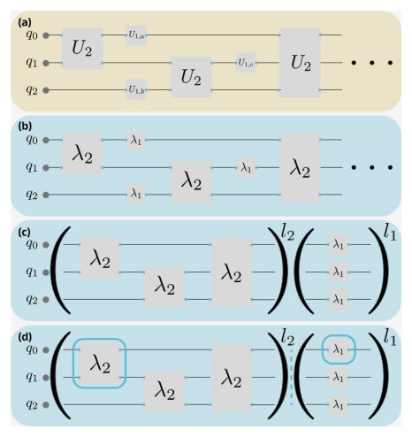
<figcaption class="paper-figure-caption"><b>Fig 1.</b> FIG. 1. Our approach for deriving each noisy gate’s contri- bution to global depolarization. (a) Assume we have some circuit, each of whose qubit pairs experiences the same num- ber of two-qubit gates, and each of whose qubits experiences the same number of single-qubit gates. (b) We can write the local depolarizing elements under our assumption that single- qubit gates all have depolarizing parameter λ1 and two-qubit gates have depolarizing parameter λ2. (c) Depolarizing error channels commute, so we can gather the two-qubit depolariz- ing elements in blocks of fully-connected motifs; likewise, we gather single-qubit depolarizing elements in complete layers of gates. In this case, we find...</figcaption>
</figure>
<figure class="paper-figure-card">
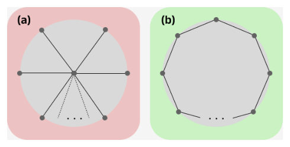
<figcaption class="paper-figure-caption"><b>Fig 2.</b> FIG. 2. Example device connectivity graphs, where qubits are denoted by nodes, and connections by edges. In (a), qubits are connected in a star configuration; more qubits are added by radially connecting them to a central qubit. In (b), qubits are connected in a circular configuration.</figcaption>
</figure>
<figure class="paper-figure-card">
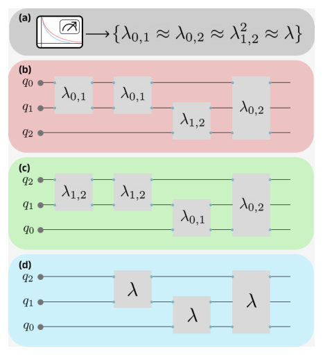
<figcaption class="paper-figure-caption"><b>Fig 3.</b> FIG. 3. An example of circuit balancing. (a) Suppose we have conducted a routine set of benchmarking on a three- qubit device and found this approximate relationship over the depolarizing parameters corresponding to the pairwise two- qubit gates. (b) We are given a circuit using four two-qubit gates, which amount two four local depolarizations. Without circuit balancing, the total local depolarization on each two- qubit pair is different. (c) By permuting the qubit labels in the register (which is simply a form of layout selection for an all-to-all connected device), we enforce similar total local depolarization across qubit pairs. (d) Using the relationships determined through benchmarking...</figcaption>
</figure>
<figure class="paper-figure-card">
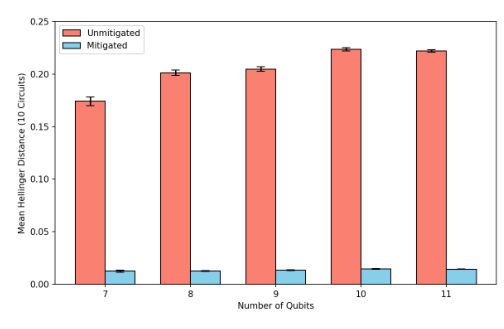
<figcaption class="paper-figure-caption"><b>Fig 4.</b> FIG. 4. We construct 10 approximate unitary 2-designs for several register sizes (depicted on the x axis), and we plot the mean Z-basis measurement distribution Hellinger distance from the ideal (depicted on the y axis; lower is better) for both the mitigated and unmitigated methods. Mean distance is reduced by at least 92% in each case. The error model here contains only depolarization (no coherent errors).</figcaption>
</figure>
<figure class="paper-figure-card">
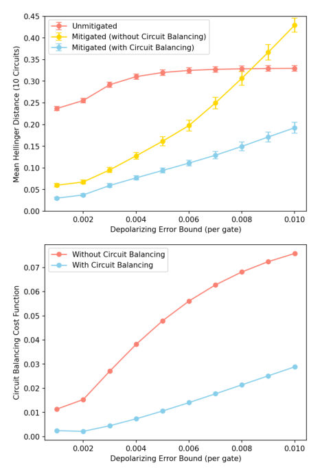
<figcaption class="paper-figure-caption"><b>Fig 5.</b> FIG. 5. A comparison of methods over 10 asymmetric Haar- random circuits, run on 10 simulated backends with different error profiles. In this case, the error models contain only gate-based depolarization (no coherent error), but the uniform distribution from which error per gate is selected broadens as the bound on the depolarizing error increases along the x axis. Top: the mean Hellinger distance from the ideal (lower is better) of the three methods are compared over various gate error ranges for 6-qubit random unitaries. Even for fixed circuit balancing optimization, there is a broad error regime where mitigation with circuit balancing outperforms the default and is more resilient to...</figcaption>
</figure>
</div>

<p><strong>Summary.</strong> This paper presents a novel, overhead-free error mitigation protocol for quantum circuits approximating unitary k-designs. It combines 'circuit balancing' with Pauli twirling to estimate and invert global depolarization caused by both depolarizing and coherent noise. The technique demonstrates significant fidelity improvements on superconducting quantum hardware, making complex simulations more feasible on noisy devices.</p>
<p><strong>Why it may be interesting.</strong> The focus on mitigating errors in circuits designed to mimic complex physical dynamics (like quantum chaos) is highly relevant for simulating strongly correlated or non-equilibrium quantum systems using current NISQ hardware.</p>
<details>
<summary>Detailed structure</summary>
<p><strong>Main problem.</strong> Developing efficient quantum error mitigation techniques for quantum circuits representing unitary k-designs, especially in the presence of both depolarizing and coherent errors, without incurring significant quantum overhead.</p>
<p><strong>Main result.</strong> The proposed method significantly reduces average random circuit infidelity on both simulated and real superconducting quantum hardware (IBM Fez) without adding two-qubit gate overhead.</p>
<p><strong>Method.</strong> The authors introduce 'circuit balancing' to estimate global depolarization by leveraging the structure of k-design Pauli support distributions, followed by inverting the noise model using Pauli twirling.</p>
<p><strong>Model / system.</strong> The work analyzes quantum circuits approximating unitary k-designs, relevant for simulating quantum chaos (e.g., near black holes). Testing is performed on superconducting quantum computers (IBM Fez) and simulated for various connectivity graphs.</p>
<p><strong>Key observables.</strong> Mean Hellinger distance, Loschmidt echo survival probability, and estimated global depolarizing parameters ($\lambda_{	ext{avg}, 2Q}$).</p>
<p><strong>Important parameters / regimes.</strong> Depolarizing parameter ($\lambda$), coherent error angle ($   heta$), circuit depth, and the number of twirls ($t$).</p>
<p><strong>Assumptions / limitations.</strong> The method assumes the availability of regular device benchmarking data and relies on asymptotic scaling arguments for the required number of twirls.</p>
<p><strong>Figures summary.</strong> Figures compare Hellinger distance reduction across different error models (depolarizing only vs. depolarizing + coherent) and show that circuit balancing and twirling stabilize fidelity on real hardware.</p>
<p><strong>Paper structure.</strong> The paper progresses from establishing the need for mitigation in k-designs, deriving theoretical bounds for global depolarization on structured graphs, introducing circuit balancing to optimize local error variance, and finally applying Pauli twirling to invert the noise model for practical error suppression.</p>
</details>
<details>
<summary>Abstract</summary>
<p>Quantum circuit ensembles that have the properties of unitary k-designs represent applications where there is no obvious bias toward any particular Pauli support, as is the case in simulating systems exhibiting ''quantum chaos,'' which range from quantum dynamics near black holes to gapless spin fluid analysis. However, noisy hardware makes quantum circuits prone to a myriad of error sources, of which depolarizing and coherent error can be particularly destructive. To combat depolarizing error, popular techniques typically involve circuit or gate folding, which can be time-intensive procedures due to increased circuit depth and shot overhead. Other tensor-network-based mitigation techniques suffer from intractability in high-entanglement regimes. In this work, we leverage the structure of unitary k-design Pauli support distributions by introducing a technique we name ''circuit balancing,'' along with gate benchmarking data, in order to estimate circuit-wide depolarization. We describe how to invert the diagnosed circuit depolarization even in the presence of coherent error, via Pauli twirling. We provide asymptotics to estimate the number of twirls needed to maintain a desired output fidelity. We test our method numerically in a variety of simulation settings and find that it can significantly reduce average random circuit infidelity. Further, we employ our methods to find significant infidelity reductions when running a random circuit ensemble on a contemporary superconducting quantum computer, IBM Fez. Overall, we show that the method effectively reduces gate-based error for unitary k-designs without incurring any two-qubit gate overhead.</p>
</details>
<p><sub><a href="#top">↑ back to top</a></sub></p>

<p><a id="paper-2606.02861"></a></p>
<h3 id="exact-solutions-for-spin-conserving-models-and-the-wigner-araki-yanase-theorem"><a href="http://arxiv.org/abs/2606.02861v1">Exact Solutions for Spin Conserving Models and the Wigner-Araki-Yanase Theorem</a></h3>
<p><strong>Authors:</strong> Michael Steiner, Ronald Rendell<br>
<strong>Type:</strong> theory · <strong>Category:</strong> other · <strong>PDF:</strong> <a href="https://arxiv.org/pdf/2606.02861v1">https://arxiv.org/pdf/2606.02861v1</a><br>
<strong>Analysis basis:</strong> full PDF text, analyzed in chunks
<strong>Topic relevance:</strong> 🔥 <code>quantum measurements</code> <strong>4/5</strong> · <code>measurement-induced transitions</code> <strong>3/5</strong></p>
<div class="figure-strip-hint">↔ Scroll figures horizontally</div>
<div class="paper-figures-scroll">
<figure class="paper-figure-card">
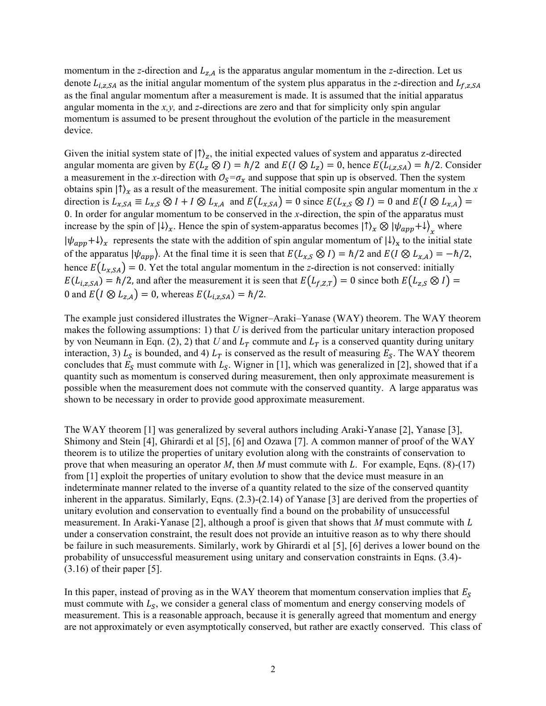
<figcaption class="paper-figure-caption"><b>Fig 1.</b> Low-resolution page preview, page 2</figcaption>
</figure>
<figure class="paper-figure-card">
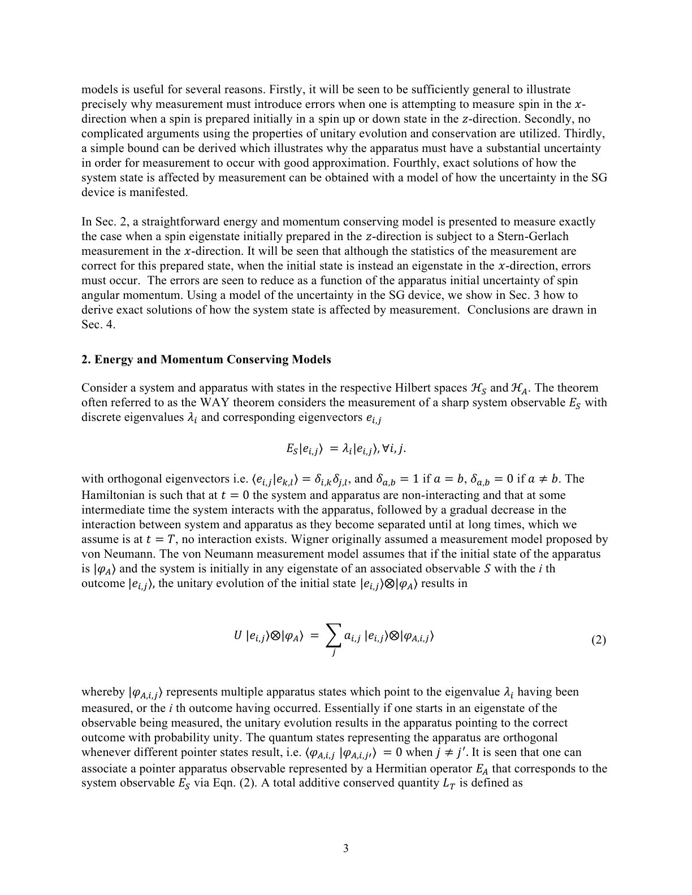
<figcaption class="paper-figure-caption"><b>Fig 2.</b> Low-resolution page preview, page 3</figcaption>
</figure>
<figure class="paper-figure-card">
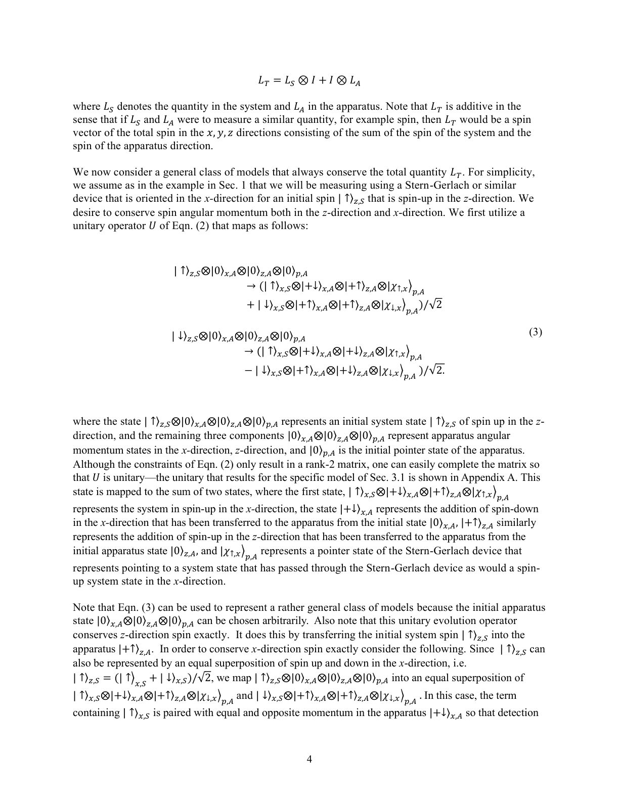
<figcaption class="paper-figure-caption"><b>Fig 3.</b> Low-resolution page preview, page 4</figcaption>
</figure>
<figure class="paper-figure-card">
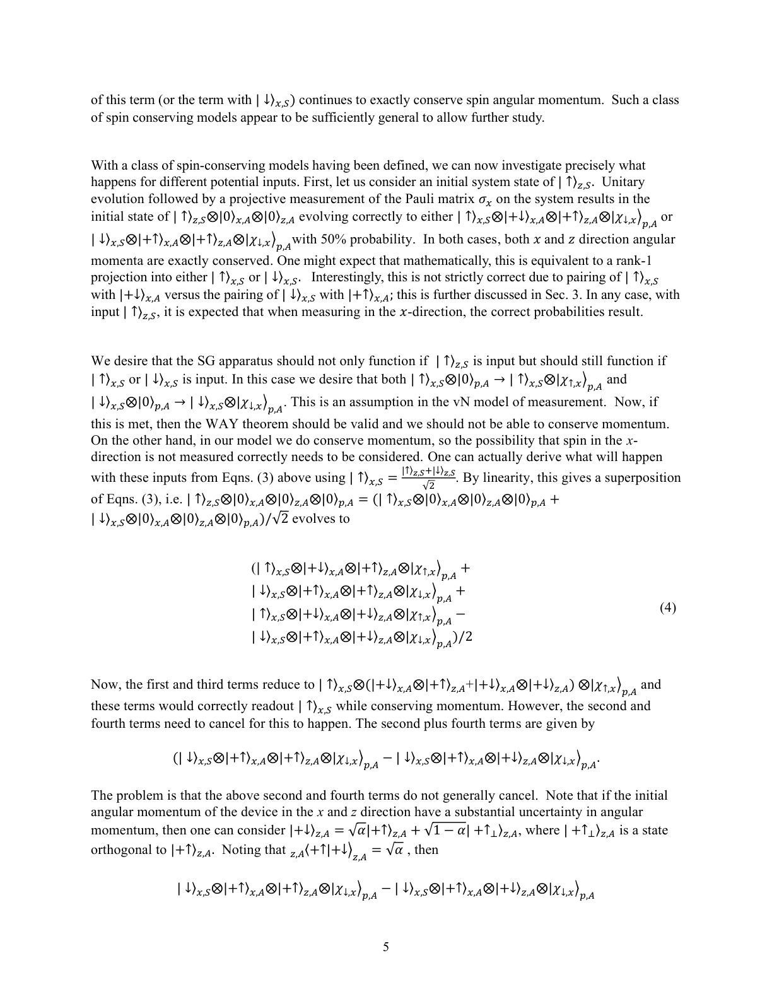
<figcaption class="paper-figure-caption"><b>Fig 4.</b> Low-resolution page preview, page 5</figcaption>
</figure>
<figure class="paper-figure-card">
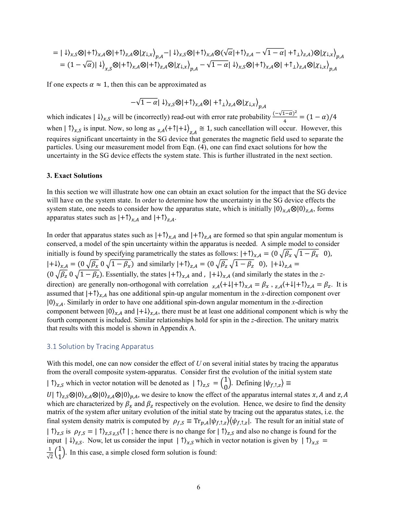
<figcaption class="paper-figure-caption"><b>Fig 5.</b> Low-resolution page preview, page 6</figcaption>
</figure>
</div>

<p><strong>Summary.</strong> This paper re-examines the Wigner-Araki-Yanase theorem by developing a general model based on exact total angular momentum conservation. Using both density matrix tracing and Kraus operators, the authors show that measurement outcomes are constrained by apparatus uncertainties, providing a deeper physical understanding of measurement limitations.</p>
<p><strong>Why it may be interesting.</strong> This work is highly relevant to open quantum systems and quantum measurement theory, providing a rigorous, generalized framework for understanding how conservation laws constrain measurement outcomes beyond standard assumptions.</p>
<details>
<summary>Detailed structure</summary>
<p><strong>Main problem.</strong> The paper investigates the fundamental limitations of quantum measurement in the presence of additive conservation laws, specifically addressing the Wigner-Araki-Yanase (WAY) theorem.</p>
<p><strong>Main result.</strong> By developing a general angular momentum conserving model of measurement, the authors provide a simple explanation for the major implications of the WAY theorem, showing that measurement errors depend on apparatus uncertainty.</p>
<p><strong>Method.</strong> The analysis uses both tracing out the apparatus from the density matrix and developing a system-only channel model based on Kraus operators to analyze the measurement process.</p>
<p><strong>Model / system.</strong> The model involves a quantum system (e.g., spin) interacting with an apparatus (like a Stern-Gerlach device) under the assumption of exact total angular momentum conservation.</p>
<p><strong>Key observables.</strong> Expected values of angular momenta ($E(L_{i,z,SA})$), the final system density matrix ($
ho_{f,S}$), and the correlation parameters ($eta_x, eta_z$).</p>
<p><strong>Important parameters / regimes.</strong> The correlation parameters $eta_x$ and $eta_z$ characterizing the non-orthogonality of apparatus states.</p>
<p><strong>Assumptions / limitations.</strong> The primary assumption is the exact conservation of total angular momentum ($L_T$) during measurement, moving beyond the standard von Neumann model assumptions.</p>
<p><strong>Paper structure.</strong> The paper first reviews the WAY theorem and then develops a general angular momentum conserving model. It proceeds by calculating the evolution using unitary operators and then deriving the system-only channel model via Kraus operators to analyze the resulting state.</p>
</details>
<details>
<summary>Abstract</summary>
<p>The Wigner-Araki-Yanase (WAY) theorem is a well-known theorem regarding limitations of quantum measurement in the presence of additive conservation laws. Under the assumptions of the von Neumann measurement model, for which the system conserved quantity $L_{S}$ is bounded, given a conserved total additive system plus apparatus quantity $L_{SA}$, the measurement operator $E_{S}$ must commute with $L_{S}$. Prior proofs have exploited the properties of unitary evolution constrained by momentum conserving operations that tend to obscure the physical nature of the WAY theorem and as well lead to bounds on performance. As it is generally agreed that momentum is always exactly conserved in measurement, we instead develop a general angular momentum conserving model of measurement. This model is shown to lead to a simple explanation of the major implications of the WAY theorem and provides exact results of the effects of measurement based on the apparatus model. This is shown by both tracing the apparatus from the density matrix and also via a system-only channel model based on Kraus operators.</p>
</details>
<p><sub><a href="#top">↑ back to top</a></sub></p>

<p><a id="paper-2606.03964"></a></p>
<h3 id="informational-completeness-of-qubit-measurements-and-ic-preservability-of-qubit-channels-characterization-and-quantification"><a href="http://arxiv.org/abs/2606.03964v1">Informational completeness of qubit measurements and IC preservability of qubit channels: Characterization and Quantification</a></h3>
<p><strong>Authors:</strong> Jatin Ghai, Arindam Mitra<br>
<strong>Type:</strong> theory · <strong>Category:</strong> quantum information and computing · <strong>PDF:</strong> <a href="https://arxiv.org/pdf/2606.03964v1">https://arxiv.org/pdf/2606.03964v1</a><br>
<strong>Analysis basis:</strong> full PDF text, analyzed in chunks
<strong>Topic relevance:</strong> 🔥 <code>quantum measurements</code> <strong>4/5</strong> · <code>entanglement &amp; information structure</code> <strong>2/5</strong> · <code>measurement-induced transitions</code> <strong>1/5</strong></p>
<div class="figure-strip-hint">↔ Scroll figures horizontally</div>
<div class="paper-figures-scroll">
<figure class="paper-figure-card">
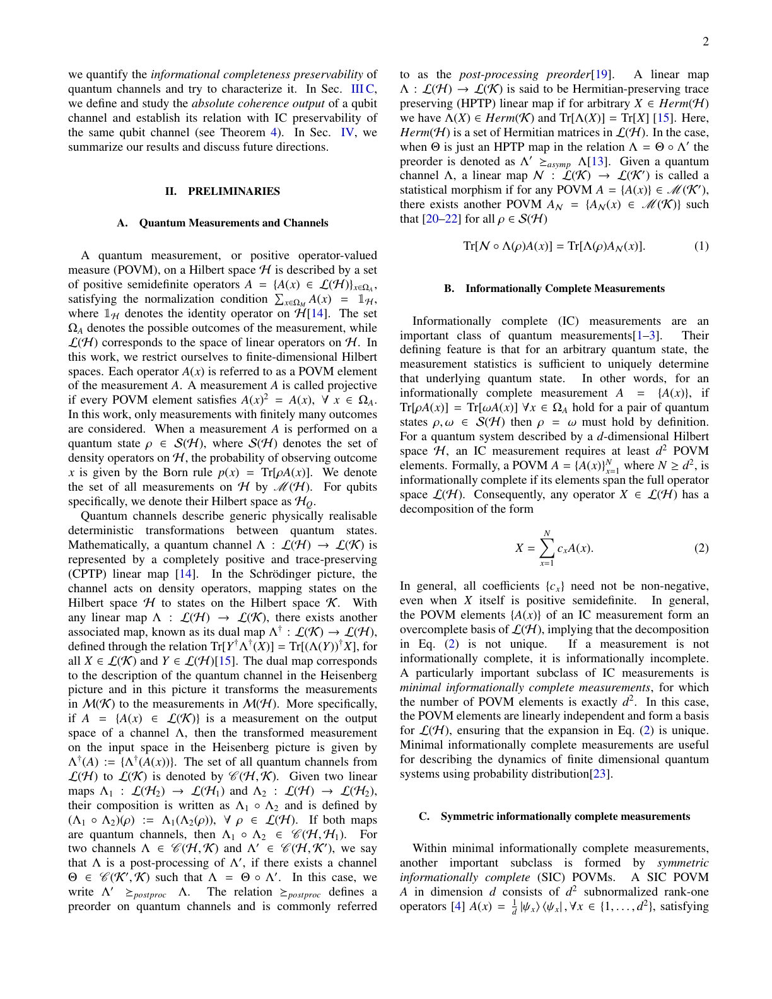
<figcaption class="paper-figure-caption"><b>Fig 1.</b> Low-resolution page preview, page 2</figcaption>
</figure>
<figure class="paper-figure-card">
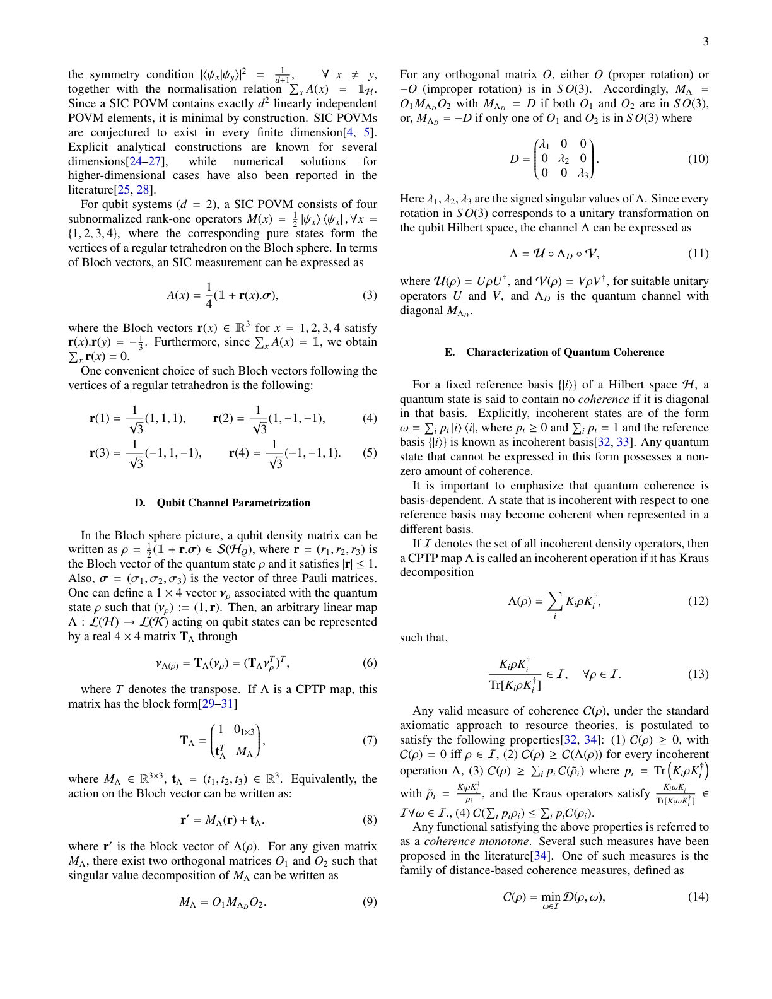
<figcaption class="paper-figure-caption"><b>Fig 2.</b> Low-resolution page preview, page 3</figcaption>
</figure>
<figure class="paper-figure-card">
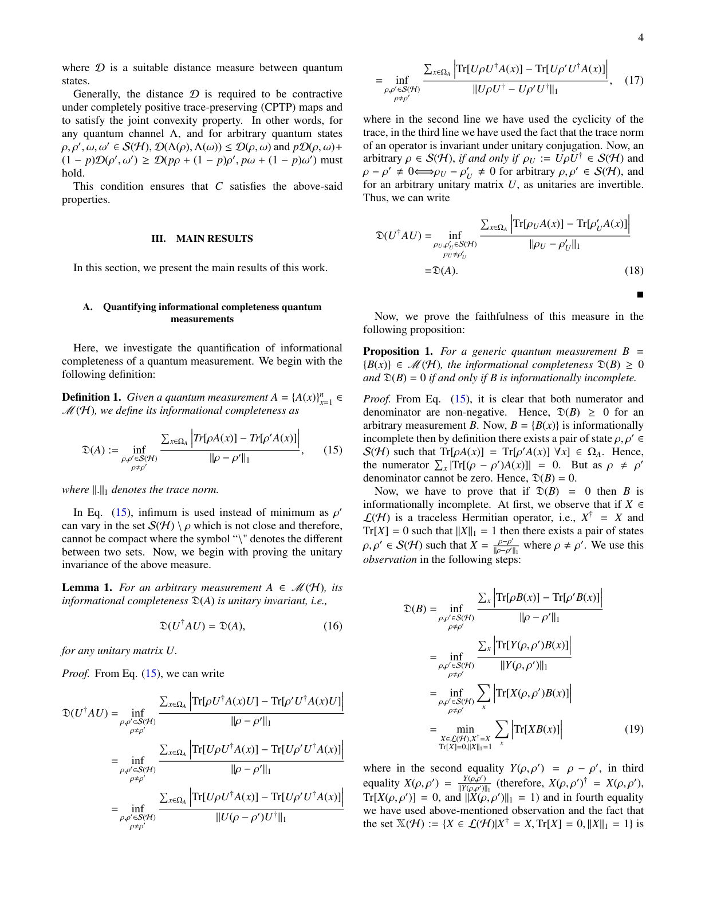
<figcaption class="paper-figure-caption"><b>Fig 3.</b> Low-resolution page preview, page 4</figcaption>
</figure>
<figure class="paper-figure-card">
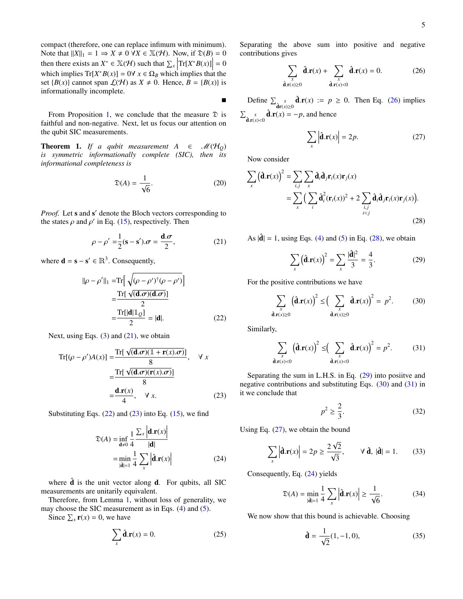
<figcaption class="paper-figure-caption"><b>Fig 4.</b> Low-resolution page preview, page 5</figcaption>
</figure>
<figure class="paper-figure-card">
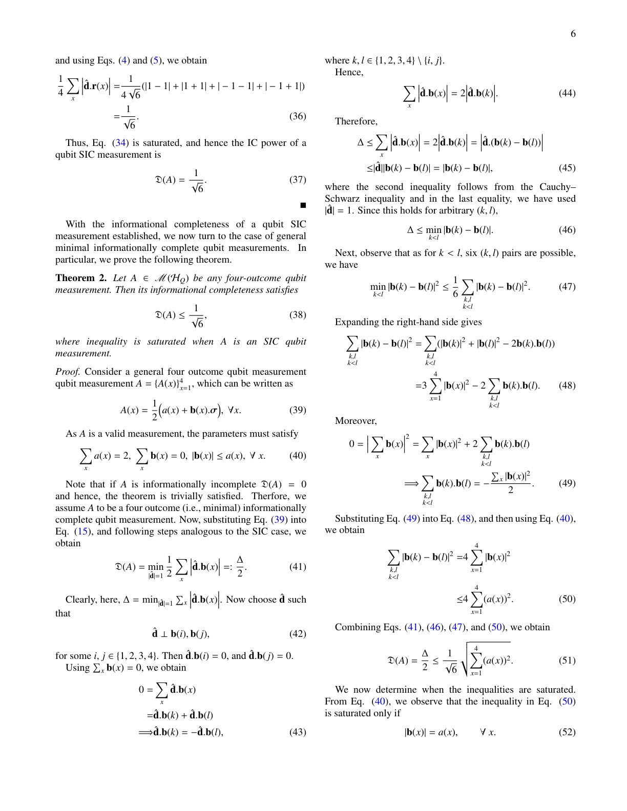
<figcaption class="paper-figure-caption"><b>Fig 5.</b> Low-resolution page preview, page 6</figcaption>
</figure>
</div>

<p><strong>Summary.</strong> This paper develops quantitative measures for informational completeness of quantum measurements and the ability of quantum channels to preserve this property. Using qubit systems, the authors establish that SIC measurements saturate the upper bound for IC. Crucially, they derive bounds linking this preservation measure to the channel's absolute output coherence, providing a deep conceptual link between information theory and quantum coherence.</p>
<p><strong>Why it may be interesting.</strong> This work provides rigorous, quantitative tools to measure how much information a quantum channel preserves about the initial state, linking fundamental concepts like measurement distinguishability (IC) to coherence measures.</p>
<details>
<summary>Detailed structure</summary>
<p><strong>Main problem.</strong> The paper aims to quantify the informational completeness (IC) of quantum measurements and characterize the ability of quantum channels to preserve this property (IC preservability).</p>
<p><strong>Main result.</strong> The authors establish a quantitative framework showing that the IC of qubit SIC measurements is $1/\sqrt{6}$, and they derive bounds relating IC preservability ($  ilde{D}(\Lambda)$) to the channel's absolute output coherence ($C(\Lambda)$).</p>
<p><strong>Method.</strong> The work involves defining and characterizing faithful measures for informational completeness, analyzing the action of quantum channels in the Heisenberg picture, and using singular value decompositions of the channel map.</p>
<p><strong>Model / system.</strong> The primary focus is on qubit systems ($d=2$), analyzing general quantum measurements (POVMs) and arbitrary quantum channels ($\Lambda$) acting on these qubits.</p>
<p><strong>Key observables.</strong> Informational Completeness ($D(A)$), Informational Completeness-Preservability ($ ilde{D}(\Lambda)$), and Absolute Output Coherence ($C(\Lambda)$).</p>
<p><strong>Important parameters / regimes.</strong> The dimension $d=2$ (qubits); the singular values ($\lambda_i$) of the channel $\Lambda$.</p>
<p><strong>Assumptions / limitations.</strong> The analysis is heavily focused on the qubit case; the derivation of bounds for $    ilde{D}(\Lambda)$ relies on assuming the measurement $A'$ is a qubit SIC measurement.</p>
<p><strong>Paper structure.</strong> The paper progresses by first quantifying IC for measurements (establishing the $1/\sqrt{6}$ bound via SIC measurements), then defining and analyzing IC preservability ($  ilde{D}(\Lambda)$) for channels, and finally establishing the relationship between $    ilde{D}(\Lambda)$ and the absolute output coherence $C(\Lambda)$.</p>
</details>
<details>
<summary>Abstract</summary>
<p>Informationally complete (IC) measurements are a useful class of measurements, as their outcome statistics uniquely determine an unknown quantum state. Hence, they are important for certain tasks such as quantum state tomography, quantum process tomography, etc. In this work, we study the quantification of informational completeness for arbitrary quantum measurements by introducing and characterizing a faithful measure for it. We explicitly evaluate the informational completeness of qubit symmetric informationally complete (SIC) measurements and show that it is an upper bound for all qubit minimal informationally complete measurements. Furthermore, by introducing a faithful measure, we try to quantify and characterize the ability of an arbitrary quantum channel to preserve informational completeness of any IC measurement when the channel acts on it in the Heisenberg picture. We call this measure informational completeness-preservability (IC preservability) of quantum channels. After studying its properties, we finally establish its relation to another quantity, namely, the absolute output coherence of a quantum channel, which quantifies the minimum amount of coherence (w.r.t. an arbitrary incoherent basis) that can always be obtained from the output of that channel. Thus, in this work, not only do we try to provide a quantitative framework for studying both the informational completeness of quantum measurements and the ability of quantum channels to preserve it, but we also try to offer key insight into the conceptual relation between informational completeness and quantum coherence.</p>
</details>
<p><sub><a href="#top">↑ back to top</a></sub></p>

<p><a id="paper-2606.03956"></a></p>
<h3 id="operator-spreading-in-random-circuits-with-orthogonal-or-symplectic-symmetry"><a href="http://arxiv.org/abs/2606.03956v1">Operator spreading in random circuits with orthogonal or symplectic symmetry</a></h3>
<p><strong>Authors:</strong> Zhiyang Tan, Piet W. Brouwer<br>
<strong>Type:</strong> theory · <strong>Category:</strong> statistical mechanics · <strong>PDF:</strong> <a href="https://arxiv.org/pdf/2606.03956v1">https://arxiv.org/pdf/2606.03956v1</a><br>
<strong>Analysis basis:</strong> full PDF text, analyzed in chunks
<strong>Topic relevance:</strong> 🔥 <code>entanglement &amp; information structure</code> <strong>4/5</strong> · <code>non-equilibrium dynamics</code> <strong>3/5</strong></p>
<div class="figure-strip-hint">↔ Scroll figures horizontally</div>
<div class="paper-figures-scroll">
<figure class="paper-figure-card">
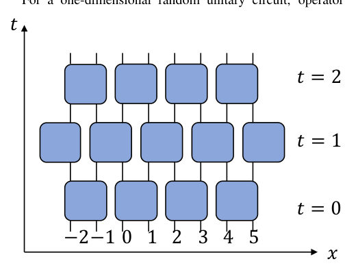
<figcaption class="paper-figure-caption"><b>Fig 1.</b> FIG. 1: Schematic of a random unitary circuit with a brickwork structure. The random circuit is composed of two-qudit gates (shown in blue) uncorrelated in space and time.</figcaption>
</figure>
<figure class="paper-figure-card">
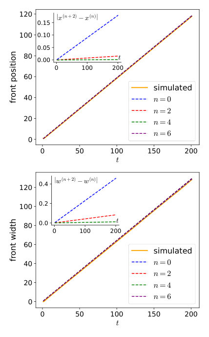
<figcaption class="paper-figure-caption"><b>Fig 2.</b> FIG. 2: Front position (top panel) and front width (variance of front position, bottom panel) vs. time t for a random unitary circuit with Haar-orthogonal two-qudit gates and qudit dimension q = 2. The solid lines in both panels represent results from direct numerical sim- ulations of the classical stochastic growth process with system size L = 200, based on N = 2 × 105 independent realizations. In the top panel, the slopes of the lines correspond to the butterfly velocity vB, while in the bottom panel, the slopes yield the diffusion constant D. The dashed curves indicate analytical results obtained from the truncation scheme at orders n = 0, 2, 4, and 6. Due to the rapid convergence of the...</figcaption>
</figure>
<figure class="paper-figure-card">
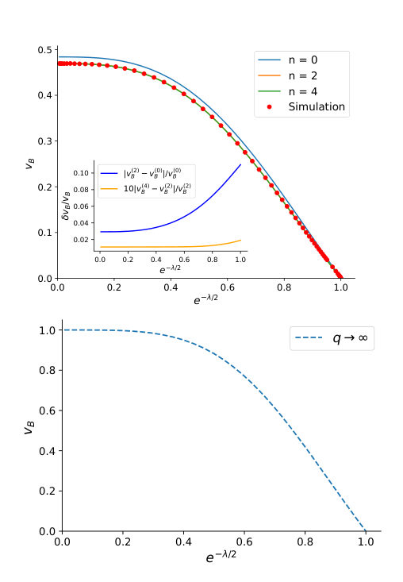
<figcaption class="paper-figure-caption"><b>Fig 3.</b> FIG. 3: Butterfly velocity for Brownian special orthogonal circuits with local dimension q = 2 and in the limit q →∞. The parameter λ interpolates between a trivial circuit and the Haar-random limit. Top panel: Solid curves represent the analytical approximations v(n) B for q = 2 at orders n = 0, 2, and 4. Symbols denote data from direct numerical simulations (system size L = 320, evolved for 200 time steps, averaged over N = 2 × 105 realizations). Due to the rapid convergence of the truncation scheme, the analytical results for all orders are virtually indistinguishable from the numerical data. Inset: Relative differences between the approximations of order n = 4 and n = 2, and between n =...</figcaption>
</figure>
<figure class="paper-figure-card">
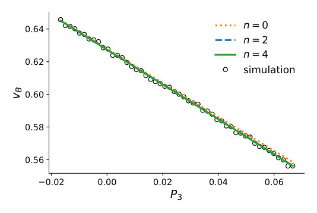
<figcaption class="paper-figure-caption"><b>Fig 4.</b> FIG. 5: Butterfly velocity for a SO−1 circuit at q = 2. The pa- rameter space of the circuit is one-dimensional and can be param- eterized by P3, which in turn determines other parameters P1 and P2. The data points represent the results of a direct numerical sim- ulation conducted on a system of size L = 320 for 200 time steps, with averaging over N = 5000 independent realizations. The curves indicate analytical predictions derived from a truncation scheme at successive orders n = 0, 2, and 4. Due to the rapid convergence of the truncation scheme, the analytical results for orders n = 2 and 4 are indistinguishable.</figcaption>
</figure>
<figure class="paper-figure-card">
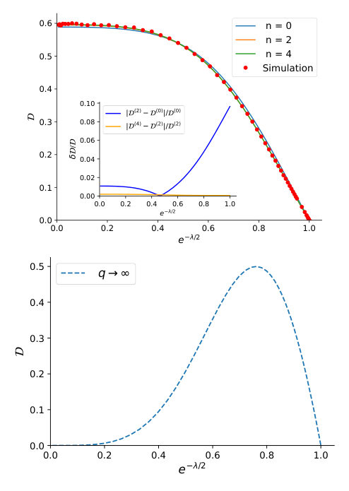
<figcaption class="paper-figure-caption"><b>Fig 5.</b> FIG. 4: Same as Fig. 3, but for the diffusion constant D for a Brow- nian special orthogonal circuit. The small fluctuations of the data points around the theoretical curve are attributed to statistical noise from the large, but finite, number of realizations N in the numerical simulations. Due to the rapid convergence of the truncation scheme, the analytical results for orders n = 2 and 4 are indistinguishable in the upper panel.</figcaption>
</figure>
</div>

<p><strong>Summary.</strong> This work analyzes how symmetry constraints (orthogonal or symplectic) modify operator spreading in random quantum circuits compared to the standard unitary case. It shows that these symmetries force the system's state representation into a ternary structure and predict specific, symmetry-dependent values for key dynamical parameters like the butterfly velocity. This is vital for understanding quantum thermalization in physical systems with underlying symmetries.</p>
<p><strong>Why it may be interesting.</strong> It provides a detailed, mathematically rigorous framework for understanding how fundamental symmetries (like time-reversal or particle-hole symmetry) constrain the scrambling dynamics in quantum many-body systems, which is crucial for understanding thermalization and quantum chaos.</p>
<details>
<summary>Detailed structure</summary>
<p><strong>Main problem.</strong> The paper investigates operator spreading in random quantum circuits when the gates are constrained by orthogonal or symplectic symmetries, contrasting these results with the standard unitary-invariant case.</p>
<p><strong>Main result.</strong> For orthogonal/symplectic circuits, the Pauli-string weights relax to a ternary-valued structure, and the domain wall separating trivial and scrambled regions has a finite width, unlike the sharp wall in the unitary case.</p>
<p><strong>Method.</strong> The analysis uses the Heisenberg picture evolution, deriving closed Markovian equations for projected ternary-string distributions and modeling the dynamics via drift-diffusion equations.</p>
<p><strong>Model / system.</strong> The system is a random quantum circuit acting on qudits ($q$-dimensional degrees of freedom) arranged in a 1D lattice, with gates drawn from orthogonal or symplectic invariant ensembles.</p>
<p><strong>Key observables.</strong> Operator spreading, butterfly velocity ($v_B$), diffusion constant ($D$), and the structure of the steady-state Pauli-string weights ($ar{
ho}_{ar{p}}$).</p>
<p><strong>Important parameters / regimes.</strong> Qudit dimension ($q$), symmetry type (orthogonal/symplectic), and the degree of randomness (Haar vs. Brownian).</p>
<p><strong>Assumptions / limitations.</strong> The analysis relies on projecting the full state space onto a simplified binary or ternary string distribution to derive tractable Markovian evolution equations.</p>
<p><strong>Figures summary.</strong> Figures illustrate the front position and width of operator spreading for random unitary circuits, comparing analytical approximations with numerical simulations.</p>
<p><strong>Paper structure.</strong> The paper progresses from establishing the general problem and the difference between symmetry classes, deriving the Markovian evolution equations for the projected ternary distribution, and finally deriving the drift-diffusion equation governing the long-time dynamics.</p>
</details>
<details>
<summary>Abstract</summary>
<p>We investigate operator spreading in random quantum circuits with gates drawn from orthogonal-invariant or symplectic-invariant ensembles, revealing several key distinctions from the well-studied unitary-invariant case. We find that the ensemble-averaged Pauli-string weights relax to a ternary-valued structure, instead of the binary structure of unitary-invariant circuits. For orthogonal- or symplectic-invariant circuits, the domain wall separating trivial and scrambled regions has a finite width even for Haar-random gates, whereas domain walls are sharp for Haar-distributed random unitary circuits. We further find a fundamental dichotomy between random circuits with two-qubit gates from the two disconnected components of the orthogonal group: While the butterfly velocity for the special orthogonal ensemble lies between zero and the Haar value, the negative-determinant sector exhibits a non-zero lower bound for any gate distribution. Moreover, for qudit size $q=2$, the butterfly velocity can exceed that of the Haar-random ensemble.</p>
</details>
<p><sub><a href="#top">↑ back to top</a></sub></p>

<p><a id="paper-2606.03977"></a></p>
<h3 id="pure-states-for-subregions-in-gravity-and-their-entanglement-entropy"><a href="http://arxiv.org/abs/2606.03977v1">Pure states for subregions in gravity and their entanglement entropy</a></h3>
<p><strong>Authors:</strong> Zixia Wei<br>
<strong>Type:</strong> theory · <strong>Category:</strong> other · <strong>PDF:</strong> <a href="https://arxiv.org/pdf/2606.03977v1">https://arxiv.org/pdf/2606.03977v1</a><br>
<strong>Analysis basis:</strong> full PDF text, analyzed in chunks
<strong>Topic relevance:</strong> 🔥 <code>entanglement &amp; information structure</code> <strong>4/5</strong></p>
<div class="figure-strip-hint">↔ Scroll figures horizontally</div>
<div class="paper-figures-scroll">
<figure class="paper-figure-card">
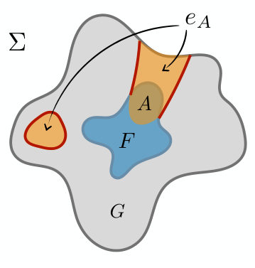
<figcaption class="paper-figure-caption"><b>Fig 1.</b> FIG. 1. Sketch of the computation of the entanglement en- tropy using (16). Shown is a spatial slice Σ with nontrivial gravitating boundary ∂Σ. The frozen subregion F is shown in blue, and the ambient gravitating region G is shown in gray. Given a subregion A ⊂F, a representative eA satis- fying the frozen condition (17) is shown in yellow. The red surface γ|F (eA) is the codimension-2 surface defined in (18).</figcaption>
</figure>
</div>

<p><strong>Summary.</strong> This paper proposes that spatial subregions in quantum gravity can be described by pure quantum states, not mixed ones. It introduces a novel holographic formula for calculating the entanglement entropy of these subregions. The key achievement is demonstrating that this formula is mathematically consistent with core principles of quantum information theory, such as strong subadditivity.</p>
<p><strong>Why it may be interesting.</strong> While highly theoretical, the rigorous derivation of entanglement entropy in a gravitational context provides deep insights into how quantum information principles (like SSA) must constrain the structure of spacetime itself, which is relevant for understanding quantum correlations in complex many-body systems.</p>
<details>
<summary>Detailed structure</summary>
<p><strong>Main problem.</strong> The paper addresses whether spatial subregions in quantum gravity can be assigned pure quantum states, moving beyond the standard mixed reduced density matrix description.</p>
<p><strong>Main result.</strong> It proposes a holographic prescription for the entanglement entropy that satisfies fundamental consistency conditions like strong subadditivity and complementarity, and reduces to known formulas like Ryu-Takayanagi.</p>
<p><strong>Method.</strong> The authors use a partially frozen gravitational path integral (GPI) to prepare the state and conjecture a holographic formula involving minimizing over surfaces constrained by the frozen region.</p>
<p><strong>Model / system.</strong> The system is quantum gravity, modeled using a gravitational path integral coupled to a QFT, focusing on the entanglement structure of spatial subregions within a larger, fixed gravitational background.</p>
<p><strong>Key observables.</strong> Entanglement Entropy ($S_{|F}A$), the pure state $|\Psi(	ext{MF} / \mathbb{Z}_2)
angle_{	ext{F} \cup \partial 	ext{F}}$, and the area of minimal surfaces ($    ext{Area}(\gamma_{|F}(eA))$).</p>
<p><strong>Important parameters / regimes.</strong> The gravitational constant ($G_N$), the geometry of the frozen region ($  ext{F}$), and the specific subregions ($   ext{A},     ext{B}$).</p>
<p><strong>Assumptions / limitations.</strong> The analysis assumes the partially frozen GPI is dominated by a saddle geometry, and the derivation relies on specific constraints related to the frozen subregion.</p>
<p><strong>Paper structure.</strong> The paper first establishes the pure state nature of the subregion using the GPI, then conjectures the holographic EE formula, and finally verifies its consistency by checking fundamental properties like SSA and complementarity.</p>
</details>
<details>
<summary>Abstract</summary>
<p>It is proposed that spatial subregions in quantum gravity can be assigned pure states, rather than mixed reduced density matrices. The state is prepared by a partially frozen gravitational path integral, in which a spacetime subregion containing the spatial subregion is fixed while the field configurations and ambient geometry are summed over. In the semiclassical regime, we further propose a holographic prescription for the entanglement entropy of bipartitions of this state, with a frozen-region analogue of the homology constraint. The prescription satisfies nontrivial self-consistency conditions, including strong subadditivity, complementarity, and entanglement wedge nesting, and reproduces several known entropy formulas in holography and gravity as special cases. The construction suggests an observer-dependent entanglement wedge labeled by the frozen subregion.</p>
</details>
<p><sub><a href="#top">↑ back to top</a></sub></p>

<p><a id="paper-2606.02943"></a></p>
<h3 id="testing-the-math190math-conjecture-with-entangled-photons"><a href="http://arxiv.org/abs/2606.02943v1">Testing the ${\rm ER=EPR}$ conjecture with entangled photons</a></h3>
<p><strong>Authors:</strong> Kimet Jusufi, Francisco S. N. Lobo, Douglas Singleton<br>
<strong>Type:</strong> theory · <strong>Category:</strong> other · <strong>PDF:</strong> <a href="https://arxiv.org/pdf/2606.02943v1">https://arxiv.org/pdf/2606.02943v1</a><br>
<strong>Analysis basis:</strong> full PDF text, analyzed in chunks
<strong>Topic relevance:</strong> 🔥 <code>entanglement &amp; information structure</code> <strong>4/5</strong></p>
<div class="figure-strip-hint">↔ Scroll figures horizontally</div>
<div class="paper-figures-scroll">
<figure class="paper-figure-card">
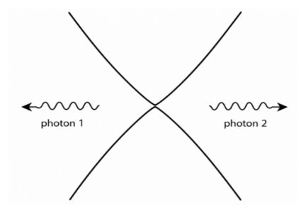
<figcaption class="paper-figure-caption"><b>Fig 1.</b> FIG. 1. An entangled e+ + e−→2γ results in a pair of entangled photons. There is an ER bridge connecting the particles. A schematic plot inspired from [29] but with a difference that our wormhole is non-traversable.</figcaption>
</figure>
</div>

<p><strong>Summary.</strong> This work provides a rigorous theoretical framework to test the ER=EPR conjecture using entangled photons. By calculating the gravitational self-energy within a regularized wormhole geometry, the authors show that the energy scales match predictions derived from entanglement entropy. The results suggest that quantum gravity effects for photons are extremely weak, leading to an immunity from collapse over cosmological timescales.</p>
<p><strong>Why it may be interesting.</strong> It provides a concrete, quantitative link between quantum entanglement (information theory) and spacetime geometry (general relativity) using ultra-relativistic quanta, which is a major frontier in theoretical physics.</p>
<details>
<summary>Detailed structure</summary>
<p><strong>Main problem.</strong> The paper tests the ER=EPR conjecture by investigating the gravitational self-energy associated with entangled photon pairs.</p>
<p><strong>Main result.</strong> The gravitational self-energy is found to be suppressed by the photon's wavelength ($1/L$), and the entanglement entropy calculation successfully reproduces this scaling, confirming the conjecture.</p>
<p><strong>Method.</strong> The authors use a regularized Aichelburg-Sexl shock-wave metric to model the geometry and calculate the self-energy, complementing this with an entanglement-entropy interpretation derived from CFT.</p>
<p><strong>Model / system.</strong> The system involves entangled photon pairs generated in $e^+e^- 	o 2\gamma$, modeled using a regularized shock-wave metric that forms a zero-throat Einstein-Rosen wormhole.</p>
<p><strong>Key observables.</strong> Gravitational Self-Energy (EGSE), Entanglement Entropy (SEE), and the collapse time ($ au_{    ext{collapse}}$).</p>
<p><strong>Important parameters / regimes.</strong> Longitudinal extent ($L$), transverse separation ($d$), and the string-inspired smearing length scale ($l_0$).</p>
<p><strong>Assumptions / limitations.</strong> The analysis relies on linearizing the metric and using a T-duality-inspired smearing scale ($l_0$) to regularize divergences.</p>
<p><strong>Paper structure.</strong> The paper develops the regularized geometry, calculates the EGSE for separated pairs, and then provides a complementary calculation using entanglement entropy to confirm the scaling and normalization of the self-energy.</p>
</details>
<details>
<summary>Abstract</summary>
<p>We regularize the Aichelburg-Sexl shock-wave metric for massless particles by smearing the point-like source over a string-inspired length scale $l_0$, obtaining a singularity-free gravitational potential. A coordinate transformation reveals that the transverse geometry is a zero-throat Einstein-Rosen wormhole, providing an explicit geometric realization of the ER=EPR conjecture for entangled photons. Crucially, we show that the gravitational self-energy depends on the photon's longitudinal extent $L$ (its wavelength) and, for a transversely separated photon pair, is suppressed by a factor $1/L$, giving $E^{\rm GSE}\sim 4G(\hbarω)^2/(c^4 L)\ln(d^2/l_0^2)$. For the coincident back-to-back pair created in $e^{+} e^{-}\to2γ$, the wormhole carries no additional binding energy; the logarithmic interaction energy emerges only after the entangled photons separate to a distance $d$, stretching the ER bridge. We further provide an entanglement-entropy interpretation: by computing the entanglement entropy of null intervals in the shock-wave geometry and introducing an effective entanglement temperature $k_B T_{\rm ent}\sim\hbar c/(2πL)$, we recover the same scaling and normalization of the gravitational self-energy. For optical photons the corresponding collapse time exceeds $10^{30}$ years, making isolated photons immune to gravity-induced wave-function collapse. These findings establish a rigorous playground for testing ER=EPR and reveal a deep suppression of quantum-gravity effects for ultra-relativistic quanta.</p>
</details>
<p><sub><a href="#top">↑ back to top</a></sub></p>

<p><a id="paper-2606.02733"></a></p>
<h3 id="coexistence-of-topologically-nontrivial-and-trivial-insulating-states-in-topological-anderson-chern-insulator"><a href="http://arxiv.org/abs/2606.02733v1">Coexistence of topologically nontrivial and trivial insulating states in topological Anderson Chern insulator</a></h3>
<p><strong>Authors:</strong> Bo Yin, Yan Zhang, Anqi Wang, Jie Shen, Zhijun Wang, Quansheng Wu<br>
<strong>Type:</strong> theory · <strong>Category:</strong> disordered systems and neural networks · <strong>PDF:</strong> <a href="https://arxiv.org/pdf/2606.02733v1">https://arxiv.org/pdf/2606.02733v1</a><br>
<strong>Analysis basis:</strong> full PDF text, analyzed in chunks
<strong>Topic relevance:</strong> <code>Keldysh / 2PI / non-Gaussian methods</code> <strong>3/5</strong> · <code>analog quantum simulation</code> <strong>3/5</strong> · <code>driven-dissipative phase transition</code> <strong>3/5</strong> · <code>methods for driven-dissipative</code> <strong>3/5</strong> · <code>spintronics-quantum-optics interface</code> <strong>3/5</strong> · <code>Kondo &amp; dissipative impurity</code> <strong>2/5</strong> · <code>exotic spin models in light-matter</code> <strong>2/5</strong> · <code>non-equilibrium dynamics</code> <strong>2/5</strong> · <code>non-equilibrium universality</code> <strong>2/5</strong></p>
<div class="figure-strip-hint">↔ Scroll figures horizontally</div>
<div class="paper-figures-scroll">
<figure class="paper-figure-card">
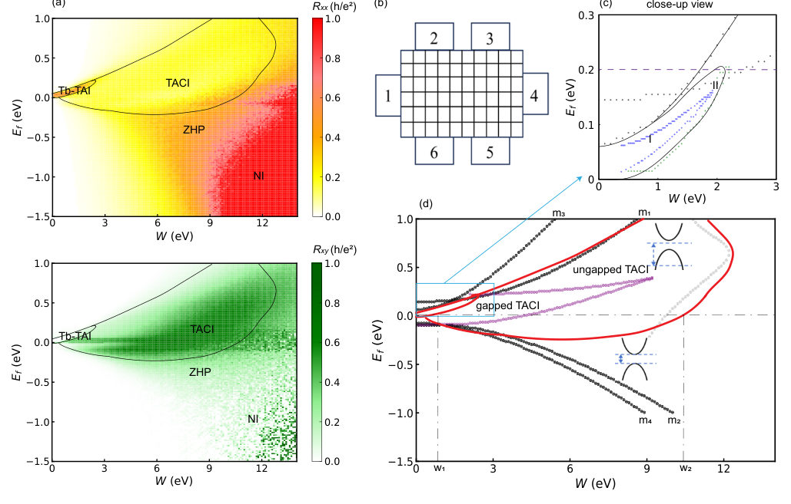
<figcaption class="paper-figure-caption"><b>Fig 1.</b> FIG. 1. Transport calculations by NEGF. (a)Phase diagram calculated by NEGF. Rxx, Rxy versus disorder strength W and Fermi energy Ef. The size is chosen as 200a×200a, a is the lattice constant, with 200 averages. Rxx and Rxy are plotted in red and green color boxes with phase boundaries in black lines, respectively.(b)Schematic diagram of six-terminal Hall bar. (c)Zoom-in on the light blue lines from Fig. 1(d). Region I, demarcated by the blue line, represents gapped TAI(ρ2 = 0). Region II, demarcated by the green line, represents ungapped TAI(ρ2 ≤1/∆2). (d)Phase diagram with phase boundaries only(red lines). Black lines are effective band edges by SCBA labeled as m1 to m4 in which m1 and...</figcaption>
</figure>
<figure class="paper-figure-card">
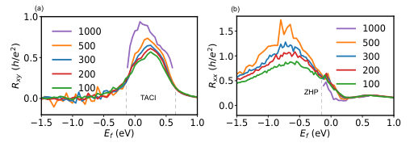
<figcaption class="paper-figure-caption"><b>Fig 2.</b> FIG. 2. Transport calculations by NEGF. (a) Rxy versus Fermi energy Ef at W = 8.5 eV.(b) Rxx versus Fermi energy Ef at W = 8.5 eV. We averaged over 2000 samples for system sizes N=100, 200 and 300, over 400 samples for size 500, and over 100 samples for size N=1000.</figcaption>
</figure>
<figure class="paper-figure-card">
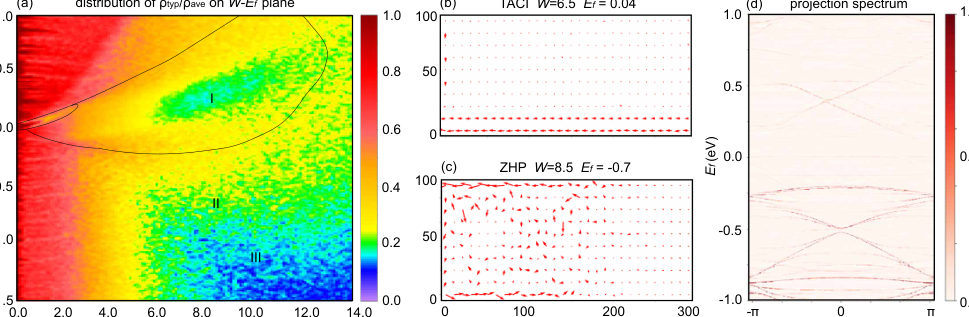
<figcaption class="paper-figure-caption"><b>Fig 3.</b> FIG. 3. Numerical evidence supporting edge states. (a)ρtyp/ρave is calculated in a square sample with size 100 under pe- riodic boundary conditions on the W-Ef plane. (b)Current distribution for device of size 300*100 at W=6.5 eV, Ef=0.04 eV. (c)Current distribution for device of size 300*100 at W=8.5 eV, Ef=-0.7 eV. The calculations are averaged over 5000 configurations. (d)Edge projection of disordered energy spectrum of generalized momentum space, device of size 400*150 at W=8.5 eV.</figcaption>
</figure>
<figure class="paper-figure-card">
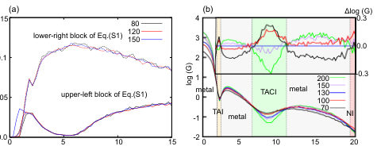
<figcaption class="paper-figure-caption"><b>Fig 4.</b> FIG. 4. Scaling calculations of phase transitions. (a)The dependence of the averaged density of states per site on dis- order strength with size N=80,120,150 at Ef=0.2 eV under periodic boundary conditions. Solid and dashed lines denote upper-left and lower-right blocks of Eq. (S1), respectively. (b)Scaling of logarithmic average of the bulk conductance with size N=70,100,130,150,200 at Ef=0.2 eV under periodic boundary conditions. The upper inset is the difference rel- ative to 130. The calculations were performed by averaging over 4000 realizations.</figcaption>
</figure>
</div>

<p><strong>Summary.</strong> This work explores how disorder can drive a time-reversal-broken quantum spin Hall state into a topological Anderson Chern insulator (TACI) in MnBi4Te7. Using advanced theoretical methods like NEGF and SCBA, the authors construct a phase diagram revealing multiple disorder-induced phases. The key finding is the stabilization of the TACI and the prediction of a unique zero Hall plateau insulating state at strong disorder.</p>
<p><strong>Why it may be interesting.</strong> The mechanism by which disorder stabilizes a topological phase (TACI) by controlling band inversions is a rich topic relevant to understanding robustness in engineered quantum materials, which shares conceptual links with disorder effects in quantum computation.</p>
<details>
<summary>Detailed structure</summary>
<p><strong>Main problem.</strong> The study investigates the complex interplay between disorder and topology, specifically demonstrating that disorder can actively induce topological phases rather than merely destroying them.</p>
<p><strong>Main result.</strong> The research identifies a novel topological Anderson Chern insulator (TACI) phase, which coexists with a zero Hall plateau insulating state at strong disorder, providing a distinct signature from conventional Chern insulators.</p>
<p><strong>Method.</strong> The authors employ Density Functional Theory (DFT), Nonequilibrium Green's Function (NEGF) calculations, and the Self-Consistent Born Approximation (SCBA) to map out a comprehensive phase diagram.</p>
<p><strong>Model / system.</strong> The system under study is the ferromagnetic (FM) monolayer MnBi4Te7, which is modeled using an effective Hamiltonian subjected to Anderson disorder.</p>
<p><strong>Key observables.</strong> Longitudinal and Hall resistances ($R_{xx}, R_{xy}$), density of states (via SCBA), and the local Chern marker ($\langle 	ext{C}_{	ext{bulk}} 
angle_{	ext{dis}}$).</p>
<p><strong>Important parameters / regimes.</strong> Disorder strength ($W$), Fermi energy ($E_f$), and critical disorder strengths ($W_{c1}, W_{c2}$).</p>
<p><strong>Assumptions / limitations.</strong> The analysis relies on finite-size scaling analysis and assumes the initial state is a T-broken QSHE state.</p>
<p><strong>Figures summary.</strong> Figures illustrate phase diagrams mapping $R_{xx}$ and $R_{xy}$ against disorder strength and Fermi energy, and show the evolution of edge transport signatures and local density of states under varying disorder.</p>
<p><strong>Paper structure.</strong> The paper progresses by establishing the theoretical framework (DFT/NEGF/SCBA), mapping the phase diagram across different disorder regimes (T-broken TAI $    o$ TACI $   o$ NI), and finally proposing and analyzing the unique zero Hall plateau state.</p>
</details>
<details>
<summary>Abstract</summary>
<p>The interplay between disorder and topology has become a central theme in condensed matter physics. Disorder can not only destroy topological phases but also induce them, as exemplified by the topological Anderson insulator (TAI). Here we show that, in close analogy, disorder can drive the clean-limit, time-reversal-broken(T-broken) quantum spin Hall state of ferromagnetic(FM) monolayer MnBi4Te7 into a quantum anomalous Hall phase, which was called topological Anderson Chern insulator (TACI). Using density functional theory (DFT) and nonequilibrium Green's func tion (NEGF) calculations in the presence of disorder, we identify disorder induced phases-including T-broken TAI, TACI, Normal insulator, etc., then construct a comprehensive phase diagram. To discriminate multiple phases in the strong disorder regime, we further use the density of states computed within the self-consistent Born approximation (SCBA), which in particular distinguishes gapped and ungapped topological phases. We find that the two effective band inversions of Hamiltonian are suppressed at distinct critical disorder strengths; the survival of a single inversion over a finite disorder window stabilizes the TACI. Remarkably, at strong disorder, we further propose a zero Hall plateau insulating state characterized by an insulating bulk and edge channels subject to diffusive scattering that can coexist with the TACI. This behavior is distinct from a conventional band-gap Chern insulator and provides a clear experimental signature.</p>
</details>
<p><sub><a href="#top">↑ back to top</a></sub></p>

<p><a id="paper-2606.03676"></a></p>
<h3 id="macroscopic-spin-ghz-states-with-a-levitated-ferromagnet"><a href="http://arxiv.org/abs/2606.03676v1">Macroscopic Spin GHZ States with a Levitated Ferromagnet</a></h3>
<p><strong>Authors:</strong> Xueqi Ni, Zhixing Zou, Ping Koy Lam, Tao Wang, Jiangbin Gong<br>
<strong>Type:</strong> both · <strong>Category:</strong> other · <strong>PDF:</strong> <a href="https://arxiv.org/pdf/2606.03676v1">https://arxiv.org/pdf/2606.03676v1</a><br>
<strong>Analysis basis:</strong> full PDF text, analyzed in chunks
<strong>Topic relevance:</strong> <code>entanglement &amp; information structure</code> <strong>3/5</strong> · <code>spintronics-quantum-optics interface</code> <strong>3/5</strong> · <code>analog quantum simulation</code> <strong>2/5</strong> · <code>driven-dissipative phase transition</code> <strong>2/5</strong> · <code>exotic spin models in light-matter</code> <strong>2/5</strong> · <code>methods for driven-dissipative</code> <strong>2/5</strong> · <code>non-equilibrium dynamics</code> <strong>2/5</strong> · <code>Keldysh / 2PI / non-Gaussian methods</code> <strong>1/5</strong> · <code>QC/QI experiment</code> <strong>1/5</strong> · <code>correlated / nonlocal dissipation</code> <strong>1/5</strong> · <code>correlated cavity matter</code> <strong>1/5</strong> · <code>non-equilibrium universality</code> <strong>1/5</strong> · <code>quantum measurements</code> <strong>1/5</strong> · <code>quantum optics experiment</code> <strong>1/5</strong></p>
<div class="figure-strip-hint">↔ Scroll figures horizontally</div>
<div class="paper-figures-scroll">
<figure class="paper-figure-card">
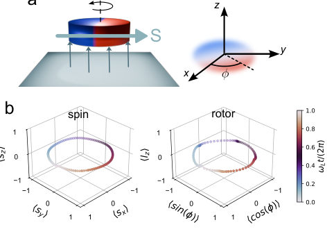
<figcaption class="paper-figure-caption"><b>Fig 1.</b> FIG. 1. Spin-lattice coupling in a levitated ferromag- net. (a) Schematic of a levitated ferromagnet, where the collective spin couples to the mechanical rotation of the lat- tice. The orientation of the lattice is depicted by a rotation angle ˆϕ in Cartesian coordinates. (b) Time evolution of the spin (left) and mechanical rotor (right) degrees of freedom in a static magnetic field, demonstrating locked precessional motion with finite-size dynamical fluctuations arising from spin-lattice angular-momentum exchange.</figcaption>
</figure>
<figure class="paper-figure-card">
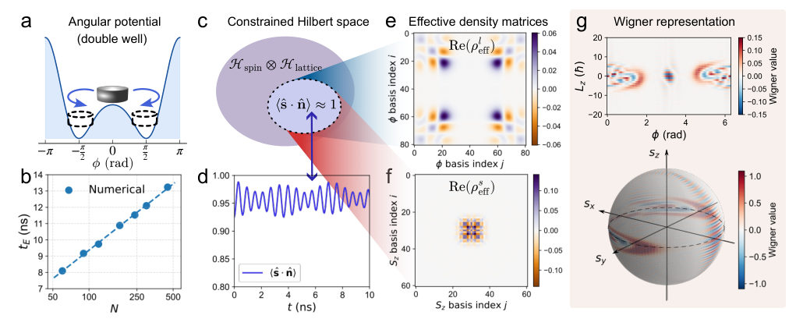
<figcaption class="paper-figure-caption"><b>Fig 2.</b> FIG. 2. Generation and phase space representation of macrospin GHZ states. (a) Illustration of a levitated fer- romagnet in an angular double-well potential. (b) Delocalization time tE versus spin number N. Numerical simulation results (dots) follow a logarithmic dependence fitted by tE ≈2.48 ln N (dashed line), using parameters (V1, V2, V3)/NℏωL = (−0.015, 0.05, −0.025). (c) Conceptual mapping of the full tensor-product Hilbert space onto the constrained subspace. (d) ⟨ˆs · ˆn⟩vs time, reflecting strong spin-lattice locking. (e) Real part of effective density matrix ˆρl eff in the rotor basis. Basis indices are ordered from 0 to 2π. (f) Real part of the effective density matrix ˆρs eff in...</figcaption>
</figure>
<figure class="paper-figure-card">
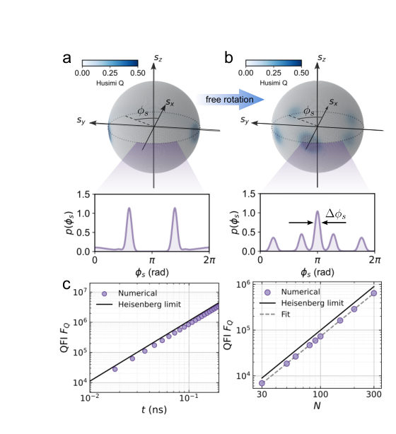
<figcaption class="paper-figure-caption"><b>Fig 3.</b> FIG. 3. Readout protocol and Heisenberg-limited magnetometry. (a-b) Spin Husimi Q distributions repre- senting the recombination of superimposed states via free ro- tation, and corresponding probability distributions of magne- tization angle ϕs (a) before and (b) after recombination. (c) Quantum Fisher information for a transverse magnetic field By as a function of time (left) and number of spins (right).</figcaption>
</figure>
<figure class="paper-figure-card">
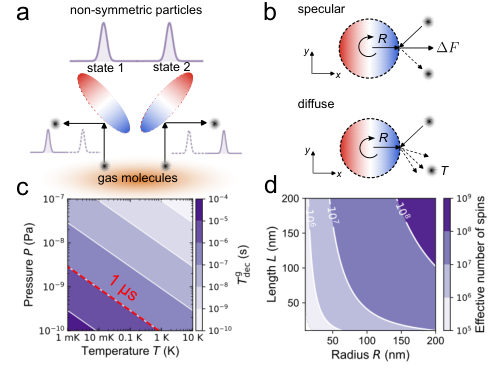
<figcaption class="paper-figure-caption"><b>Fig 4.</b> FIG. 4. Gas collisions and decoherence time scales. (a) For a non-symmetric object, a single gas-molecule collision can reveal the underlying orientation and thus induce rapid decoherence. (b) Schematics of specular and diffuse collisions, as explained in the main text. (c) Required pressures and tem- peratures corresponding to different decoherence time scales due to diffuse gas collisions for a cylinder with aspect ratio R/L = 0.5 and N = 107, surrounded by N2 gas molecules. The dashed line corresponds to a 1 µs coherence window. (d) Effective spin numbers for a cylindrical nanomagnet calcu- lated using N = MsπR2L/gµB, where Ms = 1.44 × 106 A/m is the saturated magnetization, g is the...</figcaption>
</figure>
</div>

<p><strong>Summary.</strong> This paper proposes using a levitated ferromagnet to generate macroscopic spin GHZ states by exploiting strong coupling between the collective spin and the mechanical rotor. By analyzing the constrained dynamics, the authors demonstrate that the system can achieve Heisenberg-limited precision for quantum sensing. The work is significant for both fundamental tests of quantum mechanics and developing ultra-sensitive quantum sensors.</p>
<p><strong>Why it may be interesting.</strong> This work is highly relevant as it merges concepts from cavity QED (trapping/levitation), quantum sensing (QFI scaling), and open quantum systems (Lindblad master equations) to realize a macroscopic quantum system.</p>
<details>
<summary>Detailed structure</summary>
<p><strong>Main problem.</strong> The work focuses on generating and characterizing macroscopic quantum states, specifically GHZ states, using a levitated ferromagnet to study quantum-to-classical transitions and test fundamental physics.</p>
<p><strong>Main result.</strong> The strong spin-lattice coupling allows the mechanical degree of freedom to coherently drive the spin system into a non-classical regime, achieving near-Heisenberg-limited metrological scaling.</p>
<p><strong>Method.</strong> The authors employ a top-down approach, analyzing the system dynamics by constraining the Hilbert space based on the spin-lattice locking condition and calculating the Quantum Fisher Information.</p>
<p><strong>Model / system.</strong> The physical system is a levitated ferromagnet whose collective spin is coupled to its mechanical rotation (lattice). The dynamics are governed by a Hamiltonian involving spin-lattice coupling, and the evolution is analyzed using master equations and Wigner quasiprobability distributions.</p>
<p><strong>Key observables.</strong> Quantum Fisher Information (QFI), macroscopic spin superposition state signatures (GHZ state), and the spin-lattice locking correlator $\langle \hat{s} \cdot \hat{n} 
angle$.</p>
<p><strong>Important parameters / regimes.</strong> Decoherence rates ($\Gamma_{	ext{dec}}$), required ultrahigh vacuum pressures ($\sim 10^{-9} 	ext{ Pa}$), and the spin number $N$ (up to $10^7$).</p>
<p><strong>Assumptions / limitations.</strong> The analysis relies heavily on the strong spin-lattice locking condition to define a constrained subspace, and approximations are made for decoherence modeling (e.g., high-temperature limits).</p>
<p><strong>Figures summary.</strong> Figures illustrate the spin-lattice coupling schematic, the double-well potential for GHZ state generation, the phase space representation of the macrospin GHZ states, and the scaling of QFI with spin number.</p>
<p><strong>Paper structure.</strong> The paper progresses from establishing the physical platform and the strong coupling mechanism, to deriving the effective dynamics and constrained Hilbert space, quantifying the metrological advantage via QFI, and finally analyzing decoherence from environmental noise sources.</p>
</details>
<details>
<summary>Abstract</summary>
<p>The generation of macroscopic quantum states can drive both fundamental physics and quantum technologies. This work proposes a top-down approach to the generation of macroscopic spin GHZ states using a levitated ferromagnet, where a strong locking between the collective spin and the lattice rotation enables mechanical control of the collective spin. We quantify the metrological advantage of the resulting macrospin superposition state by showing that Heisenberg scaling of the quantum Fisher information is achievable. Roles of symmetry and geometry are analyzed in terms of decoherence due to gas collisions, identifying accessible conditions for experimental realization. The usefulness of a macrospin superposition state of a levitated cylindrical ferromagnet in testing spin-dependent wavefunction collapse models is also discussed.</p>
</details>
<p><sub><a href="#top">↑ back to top</a></sub></p>

<p><a id="paper-2606.03848"></a></p>
<h3 id="generating-quantum-ensembles-via-reverse-time-quantum-diffusions"><a href="http://arxiv.org/abs/2606.03848v1">Generating quantum ensembles via reverse-time quantum diffusions</a></h3>
<p><strong>Authors:</strong> Maël Bompais, Mădălin Guţă, Juan P. Garrahan<br>
<strong>Type:</strong> theory · <strong>Category:</strong> statistical mechanics · <strong>PDF:</strong> <a href="https://arxiv.org/pdf/2606.03848v1">https://arxiv.org/pdf/2606.03848v1</a><br>
<strong>Analysis basis:</strong> full PDF text, analyzed in chunks
<strong>Topic relevance:</strong> <code>measurement-induced transitions</code> <strong>3/5</strong> · <code>methods for driven-dissipative</code> <strong>3/5</strong> · <code>quantum measurements</code> <strong>3/5</strong> · <code>non-equilibrium dynamics</code> <strong>2/5</strong> · <code>Keldysh / 2PI / non-Gaussian methods</code> <strong>1/5</strong> · <code>analog quantum simulation</code> <strong>1/5</strong> · <code>correlated / nonlocal dissipation</code> <strong>1/5</strong> · <code>driven-dissipative phase transition</code> <strong>1/5</strong> · <code>entanglement &amp; information structure</code> <strong>1/5</strong> · <code>non-equilibrium universality</code> <strong>1/5</strong></p>
<div class="figure-strip-hint">↔ Scroll figures horizontally</div>
<div class="paper-figures-scroll">
<figure class="paper-figure-card">
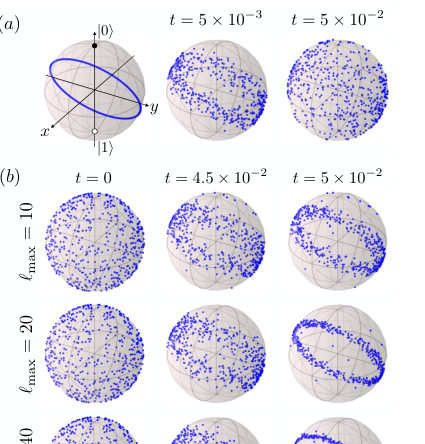
<figcaption class="paper-figure-caption"><b>Fig 1.</b> FIG. 1: (a) Forward (noising) dynamics for the 2-level example for samples from an initial measure over pure states µ0(ψ) corresponding to a great circle in the Bloch sphere. Under the noising dynamics the samples evolve towards a uniform µinv = 1/4π. (b) Backward denoising dynamics starting from uniformly distributed samples, for various levels ℓmax of approximation of the score, see [13] for details. At long times the initial µ0(ψ) is reconstructed, thus transforming noisy initial pure states to samples of the distribution of interest.</figcaption>
</figure>
<figure class="paper-figure-card">
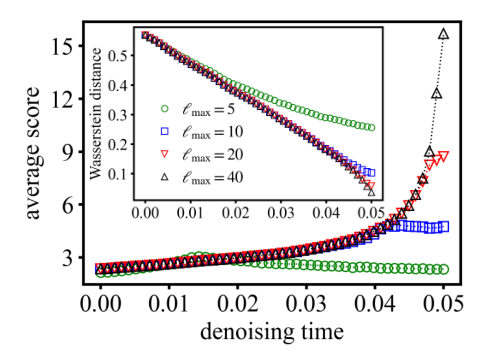
<figcaption class="paper-figure-caption"><b>Fig 2.</b> FIG. 2: Norm of the average reverse Hamiltonian in Eq.(20) as a function of denoising time in the two-level example, for several variational cut-offs ℓmax. Inset: Wasserstein distance of the learned distribution of ˜ψ to the target distribution, as a function of denoising time.</figcaption>
</figure>
</div>

<p><strong>Summary.</strong> This paper develops a rigorous theory for generating complex quantum state ensembles by implementing a reverse-time quantum diffusion process. It shows that the reverse dynamics is a controlled quantum diffusion whose Hamiltonian acts as a quantum score function. This provides a general, principled method for quantum state preparation from simple noise distributions.</p>
<p><strong>Why it may be interesting.</strong> This work provides a powerful, general mathematical tool for quantum state preparation and tomography, linking modern machine learning generative models (diffusion models) directly to fundamental open quantum system dynamics.</p>
<details>
<summary>Detailed structure</summary>
<p><strong>Main problem.</strong> The paper establishes a principled framework to generate complex quantum state ensembles by reversing a quantum diffusion process, analogous to classical score-based generative models.</p>
<p><strong>Main result.</strong> It derives the exact reverse-time dynamics, showing it is a feedback-controlled quantum diffusion governed by a state-dependent Hamiltonian that acts as the quantum analogue of the score function.</p>
<p><strong>Method.</strong> The derivation involves analyzing the reverse-time transition kernel using Bayes' formula and solving the corresponding backward Kolmogorov equation to find the required stochastic differential equation (SDE).</p>
<p><strong>Model / system.</strong> The system involves quantum states evolving via continuous measurement, modeled by a forward Stochastic Schrödinger Equation (SSE) leading to an invariant distribution. The reverse process is a controlled quantum diffusion.</p>
<p><strong>Key observables.</strong> The Wasserstein distance $W_1(	ilde{\mu}_t, \mu_0)$ is used to confirm convergence to the target distribution $\mu_0$. The mean Frobenius norm of the reverse Hamiltonian $\mathbb{E}[\|	ilde{H}_t(	ilde{\psi}_t)\|^2]$ is also monitored.</p>
<p><strong>Important parameters / regimes.</strong> The time parameter $t$ (or $T-t$), the initial distribution $\mu_0$, and the invariant distribution $\mu_{	ext{inv}}$ are key. The Hamiltonian $    ilde{H}_t(\psi)$ depends explicitly on the instantaneous state $\psi$.</p>
<p><strong>Assumptions / limitations.</strong> The derivation assumes suitable regularity conditions for the transition kernel and relies on the Markov property. For specific examples, rotational symmetry around an axis $\hat{n}$ is assumed.</p>
<p><strong>Figures summary.</strong> Figure 1 illustrates the forward noising dynamics spreading samples from $\mu_0$ towards $\mu_{	ext{inv}}$ and the reverse-time dynamics reconstructing $\mu_0$ from $\mu_{	ext{inv}}$. Figure 2 shows the convergence of the Wasserstein distance and the Hamiltonian norm for a qubit example.</p>
<p><strong>Paper structure.</strong> The paper first establishes the general theory by deriving the reverse-time SDE from the forward process's transition kernel. It then proves necessary algebraic conditions for the reverse Hamiltonian and applies these results to specific, solvable models (like the qubit) to explicitly calculate the score function and the final Hamiltonian.</p>
</details>
<details>
<summary>Abstract</summary>
<p>We establish a reverse-time denoising theory for quantum diffusions of continuously measured quantum systems. Starting from the stochastic Schrödinger equation of a forward noising dynamics, we derive the exact reverse-time dynamics for quantum trajectories, whose law coincides with the time-reversal of the original process. We prove that the denoising dynamics is a physically admissible quantum diffusion, with the same measurement-induced noise but a state-dependent feedback Hamiltonian, a direct analogue of the "score function" of generative classical diffusion models. This provides a principled framework for converting samples of a simple distribution into those of a more complex ensemble of quantum states. We show how the denoising dynamics can be directly learnt from forward trajectory data, and how to exploit purification to initialise the denoising process.</p>
</details>
<p><sub><a href="#top">↑ back to top</a></sub></p>

<p><a id="paper-2606.03789"></a></p>
<h3 id="triple-exceptional-point-with-unitary-paths-of-unfolding-in-a-three-site-fermionic-swanson-like-model"><a href="http://arxiv.org/abs/2606.03789v1">Triple exceptional point with unitary paths of unfolding in a three-site fermionic Swanson-like model</a></h3>
<p><strong>Authors:</strong> Bijan Bagchi, Aritra Ghosh, Miloslav Znojil<br>
<strong>Type:</strong> theory · <strong>Category:</strong> other · <strong>PDF:</strong> <a href="https://arxiv.org/pdf/2606.03789v1">https://arxiv.org/pdf/2606.03789v1</a><br>
<strong>Analysis basis:</strong> full PDF text, analyzed in chunks
<strong>Topic relevance:</strong> <code>driven-dissipative phase transition</code> <strong>3/5</strong> · <code>methods for driven-dissipative</code> <strong>3/5</strong> · <code>Keldysh / 2PI / non-Gaussian methods</code> <strong>2/5</strong> · <code>analog quantum simulation</code> <strong>2/5</strong> · <code>non-equilibrium dynamics</code> <strong>2/5</strong> · <code>non-equilibrium universality</code> <strong>2/5</strong> · <code>Kondo &amp; dissipative impurity</code> <strong>1/5</strong> · <code>correlated / nonlocal dissipation</code> <strong>1/5</strong> · <code>entanglement &amp; information structure</code> <strong>1/5</strong></p>
<div class="figure-strip-hint">↔ Scroll figures horizontally</div>
<div class="paper-figures-scroll">
<figure class="paper-figure-card">
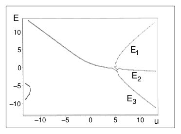
<figcaption class="paper-figure-caption"><b>Fig 1.</b> Figure 2: Numerical localization of the real (i.e., bound-state) energy levels suggesting their degeneracy near u ≈u(EP 3) = 5.</figcaption>
</figure>
<figure class="paper-figure-card">
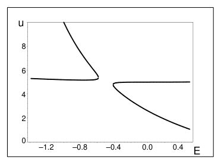
<figcaption class="paper-figure-caption"><b>Fig 2.</b> Figure 3: Avoided crossing of energy levels in the central part of Figure 2 (magnified).</figcaption>
</figure>
</div>

<p><strong>Summary.</strong> This theoretical paper studies a three-site fermionic model to analyze the complex physics occurring at a Triple Exceptional Point (EP3) singularity. Using advanced techniques from quasi-Hermitian quantum mechanics, the authors map out the conditions under which the system's energy spectrum remains real and observable during the singularity's unfolding. The findings highlight the necessity of fine-tuning parameters to maintain physical stability near such degeneracies.</p>
<p><strong>Why it may be interesting.</strong> This work provides a detailed, exactly solvable model to study non-Hermitian quantum dynamics, which is crucial for understanding open quantum systems, parity-time symmetry breaking, and spectral singularities in quantum optics and AMO physics.</p>
<details>
<summary>Detailed structure</summary>
<p><strong>Main problem.</strong> The paper investigates the quantum-mechanical unitary evolution process leading to the loss of observability at a Triple Exceptional Point (EP3) singularity.</p>
<p><strong>Main result.</strong> The authors demonstrate that the EP3 singularity exists in a three-site fermionic model and that the system's stability (real spectrum) near this point requires fine-tuning of parameters, avoiding naive level crossings.</p>
<p><strong>Method.</strong> The analysis employs quasi-Hermitian quantum mechanics (QHQM), perturbation theory, and the construction of transition matrices to analyze the spectral flow near the singularity.</p>
<p><strong>Model / system.</strong> The system is a three-site fermionic generalization of the bosonic Swanson model, described by a five-parametric Hamiltonian. The analysis extends known two-site results to this three-site structure.</p>
<p><strong>Key observables.</strong> Energy eigenvalues (E), the degree of degeneracy (EP3), and the reality/complexity of the energy spectrum during unfolding.</p>
<p><strong>Important parameters / regimes.</strong> The five Hamiltonian parameters (a, A, B, d, u), and the small perturbation parameter $\lambda$ (or $
ho = |\lambda|^{1/3}$).</p>
<p><strong>Assumptions / limitations.</strong> The analysis relies on the mathematical framework of QHQM and assumes that the system's physical interpretation is maintained by restricting the parameters to a specific 'channel of unitarity'.</p>
<p><strong>Figures summary.</strong> Figures illustrate the avoided crossing of energy levels near the EP3 singularity, showing that the expected real-level crossing is avoided, and the spectrum exhibits complex (resonant) branches for certain parameter ranges.</p>
<p><strong>Paper structure.</strong> The paper progresses from analyzing the two-site model exhibiting an EP2, to generalizing the Hamiltonian to three sites, establishing the five-parametric form, and finally analyzing the unfolding dynamics near the EP3 singularity using perturbation theory.</p>
</details>
<details>
<summary>Abstract</summary>
<p>A fermionic three-site generalization of the popular bosonic Swanson model is studied as providing an exactly solvable five-parametric example of the quantum-mechanical unitary-evolution process leading to an ultimate loss of the observability and fall in an exceptional-point singularity (EP3). The instant of degeneracy is found to have an explicit one-parametric form. Its unitarity-compatible vicinity (i.e., the corridor of access to EP3) is also specified in closed form. The exact, numerical-error-independent solvability is found essential due to another, avoided, false energy-level crossing which is found to occur not too far from the true EP3 singularity.</p>
</details>
<p><sub><a href="#top">↑ back to top</a></sub></p>

<p><a id="paper-2606.03205"></a></p>
<h3 id="geometric-bounds-on-the-finite-time-performance-of-active-machines"><a href="http://arxiv.org/abs/2606.03205v1">Geometric Bounds on the Finite-Time Performance of Active Machines</a></h3>
<p><strong>Authors:</strong> Geng Li, Z. C. Tu<br>
<strong>Type:</strong> theory · <strong>Category:</strong> statistical mechanics · <strong>PDF:</strong> <a href="https://arxiv.org/pdf/2606.03205v1">https://arxiv.org/pdf/2606.03205v1</a><br>
<strong>Analysis basis:</strong> full PDF text, analyzed in chunks
<strong>Topic relevance:</strong> <code>driven-dissipative phase transition</code> <strong>3/5</strong> · <code>non-equilibrium dynamics</code> <strong>3/5</strong> · <code>non-equilibrium universality</code> <strong>3/5</strong> · <code>Keldysh / 2PI / non-Gaussian methods</code> <strong>2/5</strong> · <code>correlated / nonlocal dissipation</code> <strong>2/5</strong> · <code>methods for driven-dissipative</code> <strong>2/5</strong> · <code>analog quantum simulation</code> <strong>1/5</strong></p>
<div class="figure-strip-hint">↔ Scroll figures horizontally</div>
<div class="paper-figures-scroll">
<figure class="paper-figure-card">
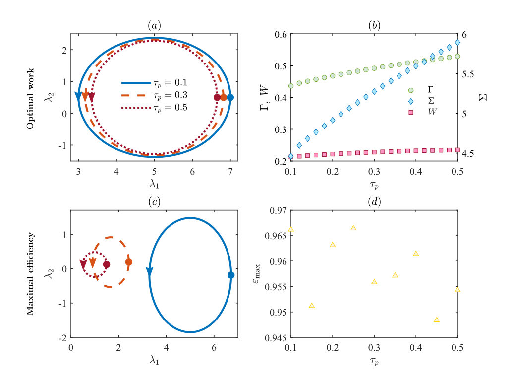
<figcaption class="paper-figure-caption"><b>Fig 1.</b> FIG. 1. Optimal driving cycles in parameter space. Throughout the simulations, we set γ = 1, T = 1, and v = 1. Panels (a) and (c) show the optimal protocols maximizing the output power and efficiency, respectively, for different persistence times τp. The circular markers denote the initial points of the cycles, while the arrows indicate the driving directions. The protocol duration is fixed at τ = 20. As τp increases, the optimal cycles progressively shrink toward weakly dissipative regions, reflecting the increasing energetic cost associated with irreversible driving. Panels (b) and (d) display the corresponding optimal power and maximal efficiency. Increasing persistence enhances the...</figcaption>
</figure>
</div>

<p><strong>Summary.</strong> This work introduces a geometric thermodynamic framework to analyze how active matter machines convert energy over finite time scales. It shows that the system's performance is governed by a decomposition of work into a curvature term (work extraction) and a metric term (dissipation). This establishes a fundamental, geometric link between active matter physics and established concepts like thermoelectric efficiency.</p>
<p><strong>Why it may be interesting.</strong> The geometric framework linking work extraction to curvature, and the direct analogy drawn to thermoelectric devices, provides powerful, general tools for analyzing non-equilibrium energy conversion in complex systems, which is relevant to open quantum systems.</p>
<details>
<summary>Detailed structure</summary>
<p><strong>Main problem.</strong> The paper develops a unified thermodynamic framework to characterize the finite-time performance of interacting active machines operating far from equilibrium.</p>
<p><strong>Main result.</strong> It establishes that the performance bounds (efficiency and power) of active machines share the functional form of thermoelectric devices with broken time-reversal symmetry, linking active matter geometry to energy conversion limits.</p>
<p><strong>Method.</strong> The analysis uses stochastic thermodynamics, linear response theory, and geometric decomposition, showing that work decomposes into an antisymmetric curvature term and a symmetric dissipation metric.</p>
<p><strong>Model / system.</strong> The model involves $N$ interacting overdamped self-propelled particles (active matter) driven by external protocols ($\lambda(t)$) and subject to thermal noise. The dynamics are analyzed using Langevin equations.</p>
<p><strong>Key observables.</strong> Cyclic work ($W$), heat ($Q$), power ($P$), efficiency ($\varepsilon$), asymmetry parameter ($r$), and the figure of merit ($\phi$).</p>
<p><strong>Important parameters / regimes.</strong> The asymmetry parameter ($r$), the protocol shape ($C$), and the time scale ($  au$) are crucial for determining performance bounds.</p>
<p><strong>Assumptions / limitations.</strong> The analysis relies heavily on the slow-driving and weak-driving limits, utilizing linear response theory approximations.</p>
<p><strong>Figures summary.</strong> Figures illustrate optimal driving cycles in parameter space, showing how increasing persistence shrinks optimal cycles toward weakly dissipative regions.</p>
<p><strong>Paper structure.</strong> The paper progresses by first defining the thermodynamic framework, decomposing work into geometric components, deriving scaling relations for work and heat using linear response, and finally applying these results to determine maximal efficiency and power output.</p>
</details>
<details>
<summary>Abstract</summary>
<p>Optimizing energy conversion in active matter remains a central challenge in nonequilibrium physics. Here, we develop a unified thermodynamic framework that characterizes the finite-time performance of interacting active machines. We show that cyclic work admits a geometric decomposition into an antisymmetric thermodynamic curvature, governing work extraction, and a symmetric metric, controlling dissipation. Minimal-dissipation protocols follow geodesics in parameter space, while optimal work extraction deviates from them due to a curvature-induced, Lorentz-like effect. This geometric structure directly determines the finite-time scaling of work and dissipation, enabling a mapping onto Onsager-type quasi-linear current--force relations. We show that both the maximal efficiency and the efficiency at maximum power are governed by an asymmetry parameter and a figure of merit, establishing a formal correspondence between active machines and thermoelectric devices with broken time-reversal symmetry. Our results reveal a fundamental geometric origin of energy-conversion performance and provide a general framework for optimizing active machines.</p>
</details>
<p><sub><a href="#top">↑ back to top</a></sub></p>

<p><a id="paper-2606.02721"></a></p>
<h3 id="simulating-condensed-matter-physics-on-quantum-hardware"><a href="http://arxiv.org/abs/2606.02721v1">Simulating Condensed Matter Physics on Quantum Hardware</a></h3>
<p><strong>Authors:</strong> Ruizhe Shen, Tianqi Chen, Tommy Tai, Jin Ming Koh, Pouyan Ghaemi, Ching Hua Lee<br>
<strong>Type:</strong> both · <strong>Category:</strong> strongly correlated electrons · <strong>PDF:</strong> <a href="https://arxiv.org/pdf/2606.02721v1">https://arxiv.org/pdf/2606.02721v1</a><br>
<strong>Analysis basis:</strong> full PDF text, analyzed in chunks
<strong>Topic relevance:</strong> <code>analog quantum simulation</code> <strong>3/5</strong> · <code>entanglement &amp; information structure</code> <strong>3/5</strong> · <code>non-equilibrium dynamics</code> <strong>3/5</strong> · <code>QC/QI experiment</code> <strong>2/5</strong> · <code>Rydberg arrays</code> <strong>2/5</strong> · <code>exotic spin models in light-matter</code> <strong>1/5</strong> · <code>methods for driven-dissipative</code> <strong>1/5</strong></p>
<div class="figure-strip-hint">↔ Scroll figures horizontally</div>
<div class="paper-figures-scroll">
<figure class="paper-figure-card">
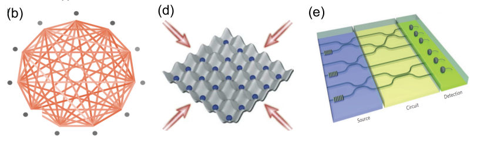
<figcaption class="paper-figure-caption"><b>Fig 1.</b> FIG. 1. Representative platforms for quantum simulation. (a) Superconducting qubits arranged in a two-dimensional lattice with tunable couplers [83], (b) Trapped-ion processor with all-to-all qubit connectivity [177], (c) Rydberg atoms in optical tweezers with interactions among excited levels [75], (d) Ultracold atoms in an optical lattice, where laser fields create periodic trapping potentials [178], (e) Photonic quantum simulator comprising single-photon sources, integrated optical circuits, and detection modules [90].</figcaption>
</figure>
<figure class="paper-figure-card">
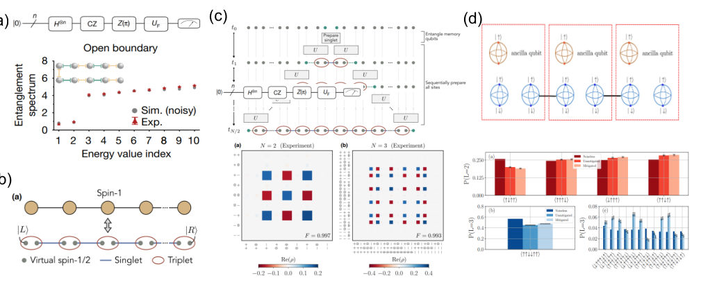
<figcaption class="paper-figure-caption"><b>Fig 2.</b> FIG. 2. Experimental demonstrations of exactly solved SPT and AKLT-type quantum states on noisy quantum hardware. (a) Preparation and characterization of a one-dimensional symmetry-protected topological (SPT) state using a circuit composed of global Hadamard gates and controlled-Z gates. The lower plot shows the corresponding entanglement spectrum extracted from experimental measurements (red triangles) and noisy simulations (gray circles), revealing the expected low-lying degeneracies associated with the open-boundary SPT phase. [411]. (b) Conceptual illustration of the Affleck–Kennedy–Lieb–Tasaki (AKLT) construction, where each physical spin-1 is represented by two virtual spin-1/2...</figcaption>
</figure>
<figure class="paper-figure-card">
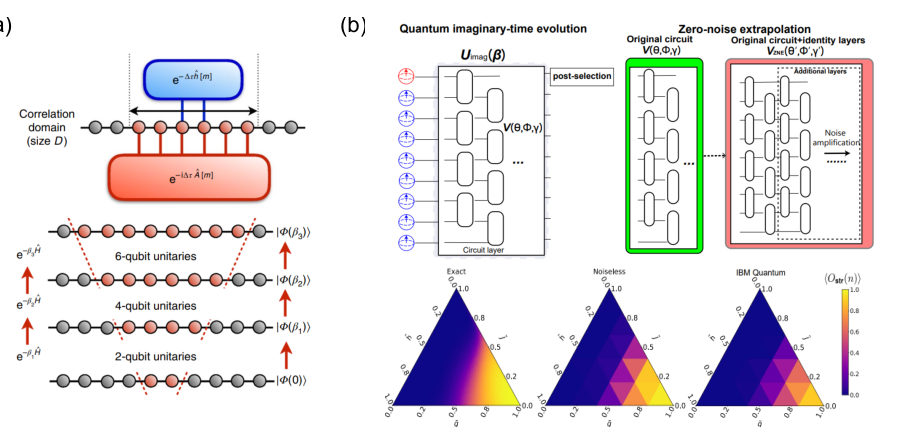
<figcaption class="paper-figure-caption"><b>Fig 3.</b> FIG. 3. Quantum imaginary-time evolution and error-mitigated simulation of quantum phases. (a) Schematic illustration of the quantum imaginary-time evolution (QITE) algorithm. The non-unitary imaginary-time operator is approximated by a sequence of local unitary transformations [423]. (b) Experimental workflow combining QITE with zero-noise extrapolation (ZNE). Left: the parametric unitary ansatz. Right: ZNE evaluates observables using the original circuit (green) and its noise- amplified versions with extra identity layers (red) inserted. Bottom: comparison of the string-order parameter, predicted by exact theory, a noiseless simulator, and data collected on IBM Quantum hardware. The...</figcaption>
</figure>
<figure class="paper-figure-card">
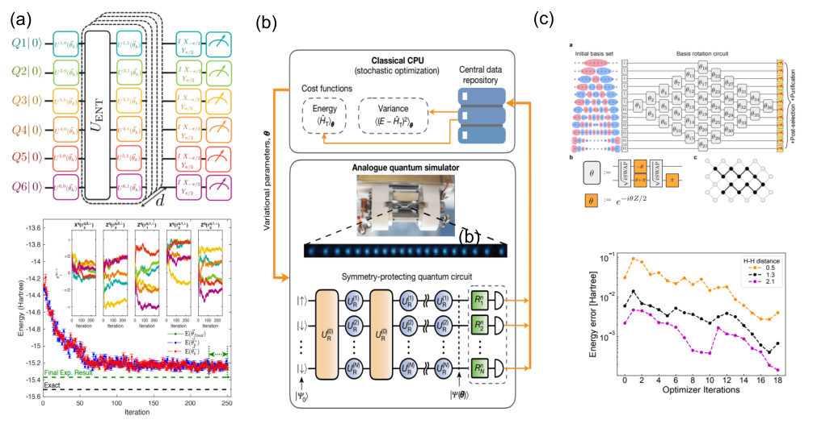
<figcaption class="paper-figure-caption"><b>Fig 4.</b> FIG. 4. Representative quantum hardware demonstrations of variational quantum solvers. (a) First proof-of-principle hard- ware implementation of the variational quantum eigensolver (VQE) using a programmable superconducting-qubit processor. An entangling unitary followed by local single-qubit rotations prepares parameterized trial states. The lower panel shows measured energy trajectories compared with exact theoretical values. [211]. (b) Demonstration of a hybrid analog–digital VQE approach. A classical optimizer updates the variational parameters, while an analog trapped-ion quantum simulator evaluates cost functions, such as the energy. A symmetry-protecting quantum circuit enhances the...</figcaption>
</figure>
<figure class="paper-figure-card">
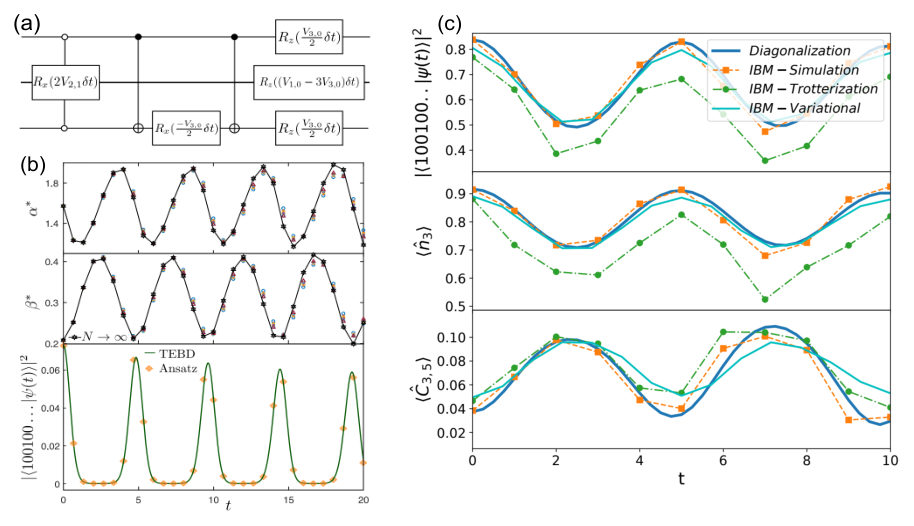
<figcaption class="paper-figure-caption"><b>Fig 5.</b> FIG. 5. (a) Circuit implementation of the trotterized unitary Uℓrepresenting one local unit of the FQH spin chain in Eq. 43. (b) Top two panels: Optimal variational parameters α∗and β∗[Eq. 48] for the 1/3-filled FQH ground state for N = 7 to 13 particles, and their extrapolation to N→∞(solid black line). These optimal parameters vary smoothly with time and importantly exhibit negligible variation with system size. Bottom panel: Excellent agreement in the overlap of the time evolved state with the root state between that computed from TEBD simulations for N=60, and that from the variational ansatz [Eq. 48] extrapolated to the same system size. TEBD simulations were performed using a bond...</figcaption>
</figure>
</div>

<p><strong>Summary.</strong> This review surveys the state-of-the-art in using quantum hardware to simulate condensed matter physics, covering platforms from superconducting qubits to ultracold atoms. It details the methodologies for simulating complex phenomena like strong correlations and topological phases using both analog and digital quantum simulation techniques. The paper emphasizes that current noisy experiments are vital for prototyping the error control necessary for future fault-tolerant quantum simulation.</p>
<p><strong>Why it may be interesting.</strong> It provides a comprehensive roadmap connecting the theoretical necessity of simulating strongly correlated matter to the practical, hardware-specific implementations and necessary error-correction protocols.</p>
<details>
<summary>Detailed structure</summary>
<p><strong>Main problem.</strong> The core challenge is simulating the complex, many-body collective behavior of quantum materials, such as those exhibiting strong electronic correlations, topological order, or non-equilibrium dynamics.</p>
<p><strong>Main result.</strong> The review surveys the progress across multiple quantum hardware platforms, demonstrating that current noisy simulations serve as crucial prototypes for developing the error control and encoding strategies needed for future fault-tolerant quantum simulation.</p>
<p><strong>Method.</strong> The paper reviews both analog simulation (engineering continuous dynamics) and digital simulation (implementing evolution via programmable quantum gates) across various hardware architectures.</p>
<p><strong>Model / system.</strong> The scope covers diverse physical models including the Hubbard model, topological phases, lattice gauge theories, and non-equilibrium systems. Hardware platforms discussed include superconducting qubits, trapped ions, ultracold atoms in optical lattices, and Rydberg arrays.</p>
<p><strong>Key observables.</strong> Entanglement entropy, topological invariants, ground-state energies, and real-time dynamics are key diagnostics used to characterize quantum phases.</p>
<p><strong>Important parameters / regimes.</strong> Coherence times, gate fidelity, interaction strengths (e.g., $E_J/E_C$), and lattice geometry (1D, 2D, 3D) are critical parameters defining platform capabilities.</p>
<p><strong>Assumptions / limitations.</strong> The primary assumption is that quantum simulation is a viable path forward, viewing current NISQ devices as necessary stepping stones toward fault-tolerant computation.</p>
<p><strong>Figures summary.</strong> The figures illustrate the diverse quantum hardware platforms available for simulation, including superconducting lattices, trapped-ion processors, Rydberg arrays, and optical lattices.</p>
<p><strong>Paper structure.</strong> The review is structured by first surveying major hardware platforms, then introducing the basic building blocks of digital quantum simulation, and finally discussing representative applications across ground-state, topological, and non-equilibrium physics.</p>
</details>
<details>
<summary>Abstract</summary>
<p>Quantum hardware platforms are getting increasingly sophisticated in their ability to simulate condensed matter, including but not limited to strongly-correlated, topological, and non-equilibrium phenomena. This review surveys recent progress in quantum-hardware-based simulations of condensed matter, primarily emphasizing gate-based digital quantum computer simulation, with analog experiments discussed as complementary benchmarks. We first review major hardware platforms, including superconducting qubits, trapped-ions, ultracold atoms, Rydberg arrays, photonic systems, and moire quantum materials. We then introduce the basic ingredients of digital quantum simulation. Building on this foundation, we discuss representative applications to condensed-matter physics, spanning ground-state problems, strongly correlated matter, topological phases, non-equilibrium dynamics, open-system physics, and high-energy-physics-inspired simulations. Finally, we summarize key methodological tools used in state-of-the-art quantum-simulation workflows. We emphasize that present noisy quantum simulations serve not only as near-term demonstrations, but also as prototypes for the encodings, diagnostic protocols and error-control strategies required for future fault-tolerant quantum simulation.</p>
</details>
<p><sub><a href="#top">↑ back to top</a></sub></p>

<p><a id="paper-2606.03293"></a></p>
<h3 id="deterministic-generation-of-cat-states-with-more-than-math242math-photons-under-dissipation"><a href="http://arxiv.org/abs/2606.03293v1">Deterministic generation of cat states with more than $100$ photons under dissipation</a></h3>
<p><strong>Authors:</strong> Zhu-yao Jin, Jun Jing<br>
<strong>Type:</strong> theory · <strong>Category:</strong> quantum information and computing · <strong>PDF:</strong> <a href="https://arxiv.org/pdf/2606.03293v1">https://arxiv.org/pdf/2606.03293v1</a><br>
<strong>Analysis basis:</strong> full PDF text, analyzed in chunks
<strong>Topic relevance:</strong> <code>driven-dissipative phase transition</code> <strong>3/5</strong> · <code>methods for driven-dissipative</code> <strong>3/5</strong> · <code>Keldysh / 2PI / non-Gaussian methods</code> <strong>2/5</strong> · <code>non-equilibrium dynamics</code> <strong>2/5</strong> · <code>non-equilibrium universality</code> <strong>2/5</strong> · <code>correlated / nonlocal dissipation</code> <strong>1/5</strong> · <code>entanglement &amp; information structure</code> <strong>1/5</strong></p>
<div class="figure-strip-hint">↔ Scroll figures horizontally</div>
<div class="paper-figures-scroll">
<figure class="paper-figure-card">
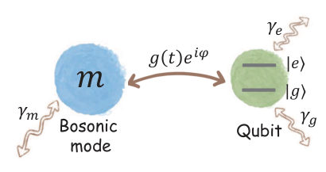
<figcaption class="paper-figure-caption"><b>Fig 1.</b> FIG. 1. Sketch of the open hybrid qubit-bosonic system, where the qubit is longitudinally coupled to the bosonic mode with the coupling strength g(t) and the phase ϕ. γe, γg and γm denote the gain or loss rates of the levels |e⟩and |g⟩and the bosonic mode, respectively. When γa = 0, a = e, g, m, it reduces to a closed qubit-bosonic system.</figcaption>
</figure>
<figure class="paper-figure-card">
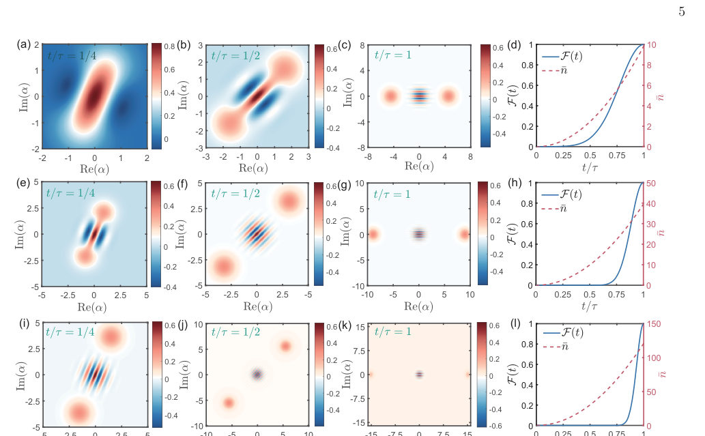
<figcaption class="paper-figure-caption"><b>Fig 2.</b> FIG. 2. Wigner functions of specific moments t/τ describing the evolution process of the resonator from vacuum state to cat state. The first three panels of each line, e.g., (a-c), (e-g), and (i-k) are associated with the resonator states |ψb(t)⟩with various amplitudes or |α|, obtained by performing projective measurement on the basis |+⟩of the qubit. The relevant dynamics about the target state fidelity and the mean photon number for the final entangled states |Ψ(τ)⟩= (|C+ α (τ)⟩⊗|+⟩−|C− α (τ)⟩⊗|−⟩)/ √</figcaption>
</figure>
<figure class="paper-figure-card">
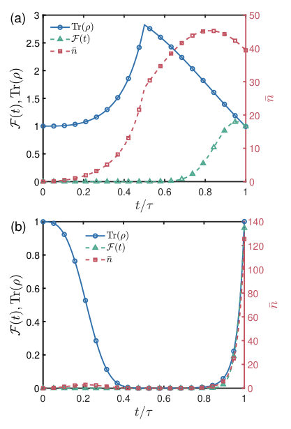
<figcaption class="paper-figure-caption"><b>Fig 3.</b> FIG. 3. Dynamics of the density-matrix trace about the whole system Tr[ρ(t)], the fidelity F(t) with respect to the target state |Ψ(τ)⟩= (|C+ α (τ)⟩⊗|+⟩−|C− α (τ)⟩⊗|−⟩)/ √</figcaption>
</figure>
<figure class="paper-figure-card">
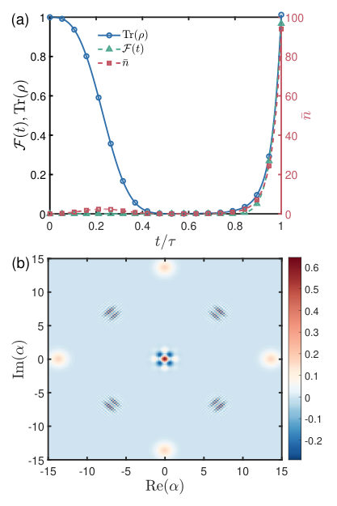
<figcaption class="paper-figure-caption"><b>Fig 4.</b> FIG. 4. (a) Dynamics of the density-matrix trace of Tr(ρ), the target state fidelity F(t), and the mean photon num- ber ¯n of the final entangled state |Ψ(τ)⟩in Eq. (42), and (b) Wigner function for the relevant four-legged cat state |ψb(τ)⟩= |C+ α (τ)⟩+ |C+ iα(τ)⟩at t = τ, obtained by a projec- tive measurement on |+⟩1|+⟩2 of the composite system. The parameters are set the same as Fig. 3(b) except θ(t) = 3πt/τ.</figcaption>
</figure>
</div>

<p><strong>Summary.</strong> This paper presents a theoretical protocol for deterministically generating large-amplitude Schrödinger cat states in hybrid qubit-bosonic systems, even when dissipation is present. By leveraging the dynamical invariant within the framework of Universal Quantum Control, the authors achieve high-fidelity generation of states with over 100 photons. This advances the control theory for hybrid quantum systems, making large-scale quantum state preparation more feasible.</p>
<p><strong>Why it may be interesting.</strong> This work provides a powerful theoretical extension of UQC theory to hybrid discrete-continuous variable systems, offering a robust method to create macroscopic quantum states essential for quantum metrology and computation despite environmental decoherence.</p>
<details>
<summary>Detailed structure</summary>
<p><strong>Main problem.</strong> The paper addresses the challenge of deterministically generating large-size Schrödinger cat states (with over 100 photons) while operating under the influence of dissipation.</p>
<p><strong>Main result.</strong> A protocol was developed that deterministically generates these large cat states with high fidelity, achieving a mean photon number exceeding 120 in both Hermitian and non-Hermitian regimes.</p>
<p><strong>Method.</strong> The methodology utilizes Universal Quantum Control (UQC) theory by analyzing the dynamical invariant of the hybrid qubit-bosonic system under time-dependent, potentially non-Hermitian Hamiltonians.</p>
<p><strong>Model / system.</strong> The system modeled is a hybrid qubit-bosonic system, whose dynamics are governed by a time-dependent Hamiltonian, analyzed through the dynamical invariant $\mu(t)$ in the ancillary picture.</p>
<p><strong>Key observables.</strong> Fidelity ($F$), mean photon number ($ar{n}$), and the evolution of the dynamical invariant $\mu(t)$.</p>
<p><strong>Important parameters / regimes.</strong> Mean photon number $ar{n} > 100$; fidelity $>0.962$ (non-Hermitian); cat state amplitude $|\alpha|$; time evolution parameters $eta(t)$ and $  heta(t)$.</p>
<p><strong>Assumptions / limitations.</strong> The analysis relies on transforming the system dynamics into a rotating frame and constraining the Hamiltonian such that the dynamical invariant can be controlled.</p>
<p><strong>Figures summary.</strong> Figures illustrate the Wigner functions showing the interference pattern of the generated cat states, and plots track the fidelity, mean photon number, and trace of the density matrix across different stages of the generation protocol.</p>
<p><strong>Paper structure.</strong> The paper builds from the general theory of UQC for hybrid systems, details the Hamiltonian and transformation into the rotating frame, derives the evolution of the dynamical invariant, and finally applies this framework to generate specific types of cat states (intrinsic and four-legged) in both closed and open systems.</p>
</details>
<details>
<summary>Abstract</summary>
<p>Large-size cat states are especially meaningful and fundamental for exploring the quantum-to-classical transition, as well as promising resources for quantum metrology and fault-tolerant quantum computation. However, amplifying the magnitude of cat states remains challenging because of the growing fragility under decoherence. We propose to generate large cat states by using the dynamical invariant of hybrid qubit-bosonic systems under Hermitian or non-Hermitian time-dependent Hamiltonian. It is a study with the universal quantum control (UQC) theory, in which the system dynamics is analyzed in the ancillary picture via a unitary transformation conditional on the qubit state. The controllable dynamics that can be encoded in the evolution of the dynamical invariant is presented by the Heisenberg equation, which imposes constrains on the Hamiltonian. When the qubit is prepared in a balanced superposed state, the bosonic mode can evolve deterministically from the vacuum state to the cat state of a mean photon number over $120$. In the Hermitian case, the generation is perfect; and in the non-Hermitian case, the fidelity is over $0.962$. Our protocol can also be applied to the generation of the intrinsic cat states and the four-component cat states of large size. Through the preparation of macroscopic quantum states, our work essentially advances UQC to hybrid discrete-continuous variable systems.</p>
</details>
<p><sub><a href="#top">↑ back to top</a></sub></p>

<p><a id="paper-2606.03722"></a></p>
<h3 id="characterizing-quantum-channels-from-local-unitary-invariants"><a href="http://arxiv.org/abs/2606.03722v1">Characterizing quantum channels from local-unitary invariants</a></h3>
<p><strong>Authors:</strong> Salwa Shaglel, Satoya Imai<br>
<strong>Type:</strong> theory · <strong>Category:</strong> quantum information and computing · <strong>PDF:</strong> <a href="https://arxiv.org/pdf/2606.03722v1">https://arxiv.org/pdf/2606.03722v1</a><br>
<strong>Analysis basis:</strong> full PDF text, analyzed in chunks
<strong>Topic relevance:</strong> <code>entanglement &amp; information structure</code> <strong>3/5</strong> · <code>correlated / nonlocal dissipation</code> <strong>2/5</strong> · <code>driven-dissipative phase transition</code> <strong>2/5</strong> · <code>methods for driven-dissipative</code> <strong>2/5</strong> · <code>Keldysh / 2PI / non-Gaussian methods</code> <strong>1/5</strong> · <code>non-equilibrium dynamics</code> <strong>1/5</strong> · <code>non-equilibrium universality</code> <strong>1/5</strong></p>
<div class="figure-strip-hint">↔ Scroll figures horizontally</div>
<div class="paper-figures-scroll">
<figure class="paper-figure-card">
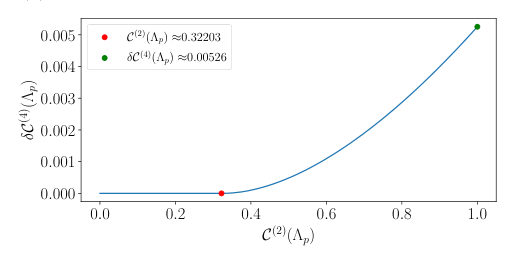
<figcaption class="paper-figure-caption"><b>Fig 1.</b> Figure 1. (a) Representation of entangling and non-entangling channels in the space spanned by the second and fourth mo- ments, C(2)(Λp) and C(4)(Λp), for a two-qubit channel model Λp defined in Eq. (10). All non-entangling cases are contained in the hashed region characterized by the dashed red curves with FNE[C(2)(Λp), C(4)(Λp)] ≥0, presented in Observation 2. The blue region corresponds to entanglement-creating cases, which marks the improvement of the criterion in Observa- tion 1. The inset shows several well-known unitaries with p = 1 according to their canonical parameters c given in Ta- ble I. (b) The gap δC(4)(Λp) between the red and black lower curves in Fig. 1 (a) with increasing...</figcaption>
</figure>
<figure class="paper-figure-card">
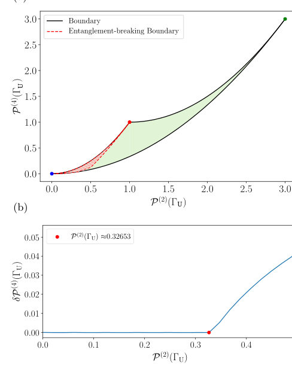
<figcaption class="paper-figure-caption"><b>Fig 2.</b> Figure 2. (a) Representation of entanglement-preserving and entanglement-breaking channels in the space spanned by the second and fourth moments, P(2)(ΓU) and P(4)(ΓU), for a single-qubit unital channel ΓU. All entanglement- breaking channels are contained in the red hashed region with FEB[P(2)(ΓU), P(4)(ΓU)] ≥0, presented in Observation 4. The green region corresponds to entanglement-preserving cases, which marks the improvement of the criterion in Obser- vation 3. (b) The gap δP(4)(ΓU) between the dashed red and solid black lower curves in Fig. 2 (a) with increasing P(2)(ΓU).</figcaption>
</figure>
<figure class="paper-figure-card">
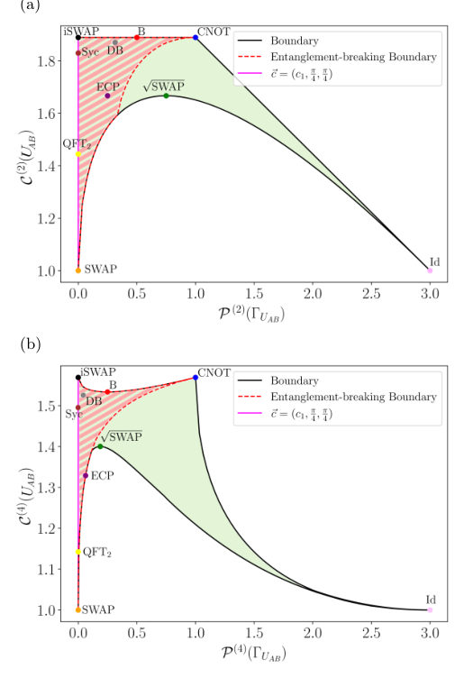
<figcaption class="paper-figure-caption"><b>Fig 3.</b> Figure 3. Representation of entanglement-preserving and entanglement-breaking channels in the space spanned by the second moments, P(2)(ΓUAB) and C(2)(UAB) in (a), or the fourth moments, P(4)(ΓUAB) and C(4)(UAB) in (b), for a two-qubit unitary UAB and the induced single-qubit chan- nel ΓUAB. All entanglement-breaking channels are contained in the hashed red area with F (t) EB[P(t)(ΓUAB), C(t)(UAB)] ≥0, presented in Observation 5. The green region corresponds to entanglement-preserving cases, which again marks the im- provement of the criterion in Observation 3. Several well- known unitaries from Table I are located.</figcaption>
</figure>
</div>

<p><strong>Summary.</strong> This work introduces averaged local-unitary invariants, or 'moments,' to systematically characterize how two-qubit quantum channels affect entanglement. By calculating these moments for $t=2$ and $t=4$, the authors establish computable criteria to distinguish between channels that create, preserve, or destroy bipartite entanglement, extending methods beyond purely unitary dynamics.</p>
<p><strong>Why it may be interesting.</strong> The development of moment-based diagnostics provides powerful, computable tools to quantify non-local correlations and entanglement changes in open quantum systems, which is crucial for understanding decoherence and quantum resource theories.</p>
<details>
<summary>Detailed structure</summary>
<p><strong>Main problem.</strong> The paper develops systematic frameworks to characterize the entanglement properties (creation, preservation, or destruction) of two-qubit quantum channels, extending beyond the limitations of unitary settings.</p>
<p><strong>Main result.</strong> The authors introduce averaged local-unitary invariants, or 'moments,' which provide computable criteria (e.g., $C(t)(\Lambda) \le 1$) to detect entanglement-creating and entanglement-preserving channels.</p>
<p><strong>Method.</strong> The core method involves calculating moments, $C(t)(\Lambda)$, by taking Haar integrals of local-unitary invariants over input states or unitaries, allowing for analysis of general, non-unitary channels.</p>
<p><strong>Model / system.</strong> The system under study is a two-qubit quantum channel ($\Lambda$) acting on a two-particle system AB. The analysis is generalized to include non-unitary channels, comparing them to the known behavior of unitary channels.</p>
<p><strong>Key observables.</strong> Averaged local-unitary invariants, or 'moments,' denoted $C(t)(\Lambda)$ and $P(t)(\Gamma)$, for $t=2$ and $t=4$.</p>
<p><strong>Important parameters / regimes.</strong> The order of the moment ($t=2, 4$) and the specific structure of the channel (e.g., mixtures of unitaries and depolarization).</p>
<p><strong>Assumptions / limitations.</strong> The analysis relies on the assumption that these moments provide sufficient information to characterize entanglement properties, though limitations are noted regarding full distinguishability.</p>
<p><strong>Figures summary.</strong> Figures illustrate the moment space spanned by $(C(2), C(4))$ and $(P(2), P(4))$, mapping out the boundaries between entanglement-creating, entanglement-preserving, and non-entangling regions for various channel types.</p>
<p><strong>Paper structure.</strong> The paper systematically develops criteria by first establishing moment definitions for general channels, then applying these moments to characterize entanglement creation in two-qubit systems, and finally extending the analysis to induced single-qubit channels ($\Gamma$) to distinguish unitaries.</p>
</details>
<details>
<summary>Abstract</summary>
<p>We develop systematic frameworks for characterizing the entanglement properties of two-qubit channels beyond unitary settings. We introduce averaged local-unitary invariants, referred to as moments, obtained from Haar integrals over input states or unitaries. These moments provide computable descriptions of how a quantum channel can create, preserve, or destroy bipartite entanglement. We first show that second-order moments yield criteria for non-entangling and entanglement-breaking channels, which allow us to detect entanglement-creating and entanglement-preserving channels. We then demonstrate that higher-order moments can capture additional information and distinguish channels beyond second-order moments alone. Finally, we show that combinations of moments associated with different channel families improve the discrimination of locally inequivalent two-qubit unitaries.</p>
</details>
<p><sub><a href="#top">↑ back to top</a></sub></p>

<p><a id="paper-2606.02824"></a></p>
<h3 id="apparent-fermionic-spectra-for-bosonic-radiation-accelerated-charge-kinematics"><a href="http://arxiv.org/abs/2606.02824v1">Apparent Fermionic Spectra for Bosonic Radiation: Accelerated Charge Kinematics</a></h3>
<p><strong>Authors:</strong> Michael R. R. Good, Evgenii Ievlev, Arsen Almaskhan<br>
<strong>Type:</strong> theory · <strong>Category:</strong> statistical mechanics · <strong>PDF:</strong> <a href="https://arxiv.org/pdf/2606.02824v1">https://arxiv.org/pdf/2606.02824v1</a><br>
<strong>Analysis basis:</strong> full PDF text, analyzed in chunks
<strong>Topic relevance:</strong> <code>non-equilibrium dynamics</code> <strong>3/5</strong> · <code>Keldysh / 2PI / non-Gaussian methods</code> <strong>2/5</strong> · <code>methods for driven-dissipative</code> <strong>2/5</strong> · <code>non-equilibrium universality</code> <strong>2/5</strong> · <code>driven-dissipative phase transition</code> <strong>1/5</strong> · <code>interference shaping light</code> <strong>1/5</strong></p>
<div class="figure-strip-hint">↔ Scroll figures horizontally</div>
<div class="paper-figures-scroll">
<figure class="paper-figure-card">
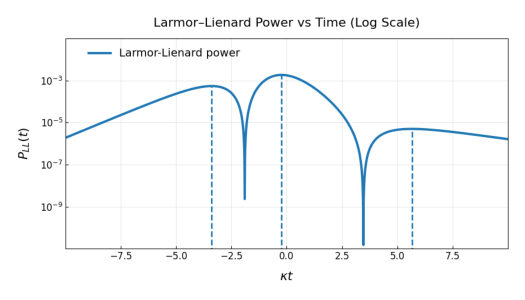
<figcaption class="paper-figure-caption"><b>Fig 1.</b> FIG. 1. Instantaneous Larmor–Li`enard radiated power PLL(t), Eq. (10), plotted on a logarithmic vertical scale. The logarithmic scale makes visible the third local maximum, Eq. (36), which is obscured on a linear vertical scale, and confirms the asymmetric triple-peak structure of the radiated power. The dashed vertical lines mark the three local maxima given in Eqs. (38), (37), and (36).</figcaption>
</figure>
</div>

<p><strong>Summary.</strong> This theoretical work shows that the electromagnetic radiation from an accelerating point charge can mimic a Fermi-Dirac spectrum using only classical electrodynamics. This spectral resemblance arises purely from the specific, non-equilibrium kinematics of the charge's motion, independent of quantum statistics or thermal equilibrium assumptions. The paper is significant because it reveals a 'thermodynamic illusion' generated purely by classical dynamics.</p>
<p><strong>Why it may be interesting.</strong> It provides a purely classical, kinematic mechanism to generate spectral signatures (like the FD spectrum) typically associated with quantum statistical ensembles (like Bose-Einstein or Fermi-Dirac distributions), which is highly relevant for understanding non-equilibrium quantum optics.</p>
<details>
<summary>Detailed structure</summary>
<p><strong>Main problem.</strong> The paper demonstrates that bosonic radiation emitted by an accelerated point charge can exhibit a Fermi-Dirac spectrum without invoking quantum statistics, thermal equilibrium, or the presence of event horizons.</p>
<p><strong>Main result.</strong> The spectral shape matches the Fermi-Dirac form purely due to the specific, out-of-equilibrium kinematics of the accelerating charge, suggesting a kinematic origin for thermal-like spectra.</p>
<p><strong>Method.</strong> The analysis uses semi-classical electrodynamics, relating the spectral distribution to the Fourier transform of the charge's trajectory, and analyzing the monodromy properties of the associated wave functions.</p>
<p><strong>Model / system.</strong> The system is a classical point charge undergoing accelerated motion, analyzed in the non-relativistic limit. The mathematical machinery involves the Lambert W-function to define the specific trajectory $z(t)$ that yields the target spectrum.</p>
<p><strong>Key observables.</strong> Fermi-Dirac spectrum $E_{FD}(\omega)$, radiated power $P(t)$, and the effective energy density $
ho_{eff}(T)$.</p>
<p><strong>Important parameters / regimes.</strong> The energy scale $\kappa$ (related to effective temperature $T$), and the non-relativistic limit assumption ($|\dot{z}| \ll 1$).</p>
<p><strong>Assumptions / limitations.</strong> The analysis relies on the non-relativistic approximation and assumes the radiation field propagates freely to infinity; the spectral match is shown to be a kinematic illusion.</p>
<p><strong>Figures summary.</strong> Figure 1 shows the instantaneous Larmor–Liénard radiated power $P_{LL}(t)$ exhibiting an asymmetric triple-peak structure, confirming the nonstationary, burst-like nature of the emission.</p>
<p><strong>Paper structure.</strong> The paper progresses by first establishing the connection between the spectrum and the trajectory's Fourier transform, deriving the required trajectory using the Lambert W-function, and then analyzing the resulting energy scaling to show recovery of standard thermodynamic laws despite the non-equilibrium process.</p>
</details>
<details>
<summary>Abstract</summary>
<p>An accelerated point charge can emit photons with an apparent Fermi-Dirac spectrum, even though the radiation is bosonic and its occupation numbers are not constrained to 0 or 1. The effect arises from a special class of acceleration kinematics and does not rely on thermal equilibrium, horizons, or statistical ensembles.</p>
</details>
<p><sub><a href="#top">↑ back to top</a></sub></p>

<p><a id="paper-2606.03733"></a></p>
<h3 id="mott-transition-of-photons-quantum-monte-carlo-study-of-gross-neveu-criticality-in-a-cavity"><a href="http://arxiv.org/abs/2606.03733v1">Mott transition of photons: quantum Monte Carlo study of Gross-Neveu criticality in a cavity</a></h3>
<p><strong>Authors:</strong> João C. Inácio, Natanael C. Costa, Fakher F. Assaad<br>
<strong>Type:</strong> theory · <strong>Category:</strong> strongly correlated electrons · <strong>PDF:</strong> <a href="https://arxiv.org/pdf/2606.03733v1">https://arxiv.org/pdf/2606.03733v1</a><br>
<strong>Analysis basis:</strong> full PDF text, analyzed in chunks
<strong>Topic relevance:</strong> <code>analog quantum simulation</code> <strong>3/5</strong> · <code>correlated cavity matter</code> <strong>3/5</strong> · <code>Keldysh / 2PI / non-Gaussian methods</code> <strong>2/5</strong> · <code>Tavis-Cummings &amp; cavity-many-emitter</code> <strong>1/5</strong> · <code>driven-dissipative phase transition</code> <strong>1/5</strong> · <code>methods for driven-dissipative</code> <strong>1/5</strong></p>
<div class="figure-strip-hint">↔ Scroll figures horizontally</div>
<div class="paper-figures-scroll">
<figure class="paper-figure-card">
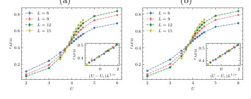
<figcaption class="paper-figure-caption"><b>Fig 1.</b> FIG. 1. Correlation ratio of the antiferromagnetic order pa- rameter as a function of U for (a) g = 0.5 and (b) g = 4. Inset: data collapse of the AFM correlation ratio with Uc = 3.819(3) and ν = 1.06(2) [37]. We fit the scaling function to a linear form and obtain (a) y = 0.0438(7)x + 0.4174(4) and for (b) y = 0.0454(5)x + 0.4407(4).</figcaption>
</figure>
<figure class="paper-figure-card">
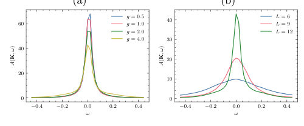
<figcaption class="paper-figure-caption"><b>Fig 2.</b> FIG. 2. Electronic spectral function at the Dirac point A(K, ω) as a function (a) of g, for L = 12, and (b) of system size, at g = 4. All results are for fixed U = 2 in the DSM phase. The results are obtained through the SAC method on the imaginary-time data G(K, τ) = ⟨ˆc† K(τ)ˆcK(0)⟩.</figcaption>
</figure>
<figure class="paper-figure-card">

<figcaption class="paper-figure-caption"><b>Fig 3.</b> FIG. 3. Photon function B(ω) as a function (a) of g, for U = 2 in the DSM phase, and (b) of U, for g = 4 across the GN transition. The data shown are for an L = 12 system. B(ω) is obtained through the SAC method on the imaginary- time data D(τ) = ⟨ˆ X(τ) ˆ X(0)⟩.</figcaption>
</figure>
<figure class="paper-figure-card">

<figcaption class="paper-figure-caption"><b>Fig 4.</b> FIG. 4. Polariton spectral function in the RPA (a) as a func- tion of g at m = 0 and (b) as a function of the mass gap m at g = 4. Here we use β = L = 108, η = 2π/L and Ω= 1.</figcaption>
</figure>
</div>

<p><strong>Summary.</strong> This paper analyzes the coupling between a Mott-insulating electronic system (Hubbard model) and a cavity photon mode. Using advanced quantum simulation techniques, the authors demonstrate that while the coupling does not alter the fundamental quantum critical point, the photon's spectral response becomes directly coupled to the electronic optical conductivity. This establishes the cavity photon as a powerful, non-invasive diagnostic tool for observing metal-to-insulator transitions.</p>
<p><strong>Why it may be interesting.</strong> This work bridges condensed matter theory (Mott physics, criticality) with quantum optics (cavity QED), showing how cavity modes can serve as sensitive, non-perturbative probes of intrinsic electronic quantum phases.</p>
<details>
<summary>Detailed structure</summary>
<p><strong>Main problem.</strong> The study investigates whether coupling a Mott-transitioning electronic system (Hubbard model) to a cavity photon mode alters the quantum critical point associated with the Mott transition.</p>
<p><strong>Main result.</strong> The coupling to the cavity photons is found to be irrelevant at the critical point, but the photon spectral function acts as a non-invasive probe for the electronic Mott transition via its coupling to the optical conductivity.</p>
<p><strong>Method.</strong> The research employs Quantum Monte Carlo (QMC) simulations and advanced field-theoretic techniques, including path integrals and Random Phase Approximation (RPA), to analyze the coupled electron-photon dynamics.</p>
<p><strong>Model / system.</strong> The model consists of the Hubbard model on a honeycomb lattice, representing the electronic system, coupled to a single, linearly polarized cavity photon mode. The coupling is analyzed within the context of Gross-Neveu (GN) criticality.</p>
<p><strong>Key observables.</strong> Photon spectral function, electronic spectral function A(K, ω), optical conductivity ($\sigma_{dc}$), and the polariton spectral function.</p>
<p><strong>Important parameters / regimes.</strong> Interaction strength ($U$), coupling strength ($g$), and the lattice geometry (honeycomb lattice).</p>
<p><strong>Assumptions / limitations.</strong> The analysis assumes the long-wavelength limit for the cavity and that the electron-photon coupling is intensive in the thermodynamic limit.</p>
<p><strong>Figures summary.</strong> Figures illustrate the stability of the critical point against coupling strength, the electronic spectral function near the Dirac point, and the emergence/suppression of polariton modes as the system crosses the Mott insulating phase.</p>
<p><strong>Paper structure.</strong> The paper progresses by first establishing the coupled Hamiltonian, then using QMC and field theory to calculate spectral functions, demonstrating that the photon coupling only probes uniform charge fluctuations, and finally concluding that the photon spectrum tracks the Mott transition via polariton formation/disappearance.</p>
</details>
<details>
<summary>Abstract</summary>
<p>The Hubbard model on the honeycomb lattice is a pristine realisation of a semimetal-to-insulator Mott transition belonging to the Gross-Neveu O(3) universality class. We couple this system to a single linearly polarised cavity photon mode. The light-matter coupling is such that the photon number remains an intensive quantity as is the case for an empty cavity. For this interacting light-matter model, we formulate a negative-sign-free fermion quantum Monte Carlo algorithm that allows for bias-free results on finite system sizes. Our numerical results show that the coupling to the cavity is irrelevant at criticality, even at strong electron-photon coupling. On the other hand, we observe, and show analytically, that the photon spectral function couples to the optical conductivity of the electronic system. The cavity photons thereby undergo a Mott transition, and the photon spectral function acts as a contact-free non-invasive probe for Mott criticality.</p>
</details>
<p><sub><a href="#top">↑ back to top</a></sub></p>

<p><a id="paper-2606.03488"></a></p>
<h3 id="piston-control-in-a-two-ion-quantum-device"><a href="http://arxiv.org/abs/2606.03488v1">Piston control in a two-ion quantum device</a></h3>
<p><strong>Authors:</strong> Jing Li, E. Ya. Sherman, Andreas Ruschhaupt<br>
<strong>Type:</strong> theory · <strong>Category:</strong> other · <strong>PDF:</strong> <a href="https://arxiv.org/pdf/2606.03488v1">https://arxiv.org/pdf/2606.03488v1</a><br>
<strong>Analysis basis:</strong> full PDF text, analyzed in chunks
<strong>Topic relevance:</strong> <code>analog quantum simulation</code> <strong>3/5</strong> · <code>QC/QI experiment</code> <strong>2/5</strong> · <code>non-equilibrium dynamics</code> <strong>2/5</strong> · <code>Keldysh / 2PI / non-Gaussian methods</code> <strong>1/5</strong> · <code>entanglement &amp; information structure</code> <strong>1/5</strong> · <code>methods for driven-dissipative</code> <strong>1/5</strong> · <code>quantum measurements</code> <strong>1/5</strong></p>
<div class="figure-strip-hint">↔ Scroll figures horizontally</div>
<div class="paper-figures-scroll">
<figure class="paper-figure-card">

<figcaption class="paper-figure-caption"><b>Fig 1.</b> FIG. 1. Schematic of the two-ion system in the x ⊗y geometry. The left ion is confined along the y direction and treated quantum me- chanically with the wavefunction ψ(y) corresponding to the effective potential V[eff] L . The right ion can move along the x axis in the po- tential VR(X) having the minimum at X = d and acts as an effective classical piston. Panels (a) and (b) illustrate the effective left-ion po- tential in the double-minimum and single-minimum realization, re- spectively. Details of the potential and corresponding notations will be presented below in the text.</figcaption>
</figure>
<figure class="paper-figure-card">

<figcaption class="paper-figure-caption"><b>Fig 2.</b> FIG. 2. Stationary state, full quantum treatment: (a) right ion prob- ability densities ρR(X), (b) zoomed-in and shifted probability densi- ties ρR, and (c) the corresponding left ion probability densities ρL(y) for the values of ωL shown in the plots, see also Eq. (31). Here ωRtu = 20, d/lu = 10.</figcaption>
</figure>
<figure class="paper-figure-card">

<figcaption class="paper-figure-caption"><b>Fig 3.</b> FIG. 4. Stationary state: Zoom in the transition region between the double-minimum and single-minimum regimes of Fig. 3 (b); full quantum treatment (joined filled marks), hybrid approxima- tion (joined open marks), classical approximation (solid line). In- set: probability density of the left ion in the full quantum calcu- lation ρL(y) (solid) and the hybrid approximation ψ(y) (dashed) for ωLtu = 75.22 (blue solid/magenta dashed) and ωLtu = 75.25 (red solid/black dashed).</figcaption>
</figure>
<figure class="paper-figure-card">

<figcaption class="paper-figure-caption"><b>Fig 4.</b> FIG. 3. Stationary state: (a) Comparisons of positions of right ion among full quantum treatment ⟨ˆX⟩(filled markers), hybrid ap- proximation χ (open markers) and classical approximation X0 (solid lines) results are shown. (b) Corresponding positions of the left ion in the same three cases: aq, ah and a0 parameters as a function of ωL. Three parameter cases in both figures: ωRtu = 20, d/lu = 10 (green), ωRtu = 20, d/lu = 8 (black), and ωRtu = 25, d/lu = 10 (red).</figcaption>
</figure>
<figure class="paper-figure-card">

<figcaption class="paper-figure-caption"><b>Fig 5.</b> FIG. 5. Control schemes corresponding to X0/lu = 20 and Xf /lu = 30, dR/lu = 10, ωRtu = 20. (a) Designed position of left particle a(t) for different final times t f . (inset) Designed position of right particle X(t). (b) Designed control schemes ωL(t) for different final times t f as well as the adiabatic reference scheme (dashed line).</figcaption>
</figure>
</div>

<p><strong>Summary.</strong> This paper details a method to control the motion of a heavy ion (piston) coupled to a light ion (quantum medium) in a two-ion quantum device. By using an inverse-engineering approach, the required time-dependent trapping potential for the light ion is calculated to achieve precise piston trajectories. The results confirm that this control scheme works robustly across classical, hybrid, and full quantum theoretical treatments.</p>
<p><strong>Why it may be interesting.</strong> This work provides a clean, controllable, and experimentally relevant model for studying quantum work extraction and controlled coupling dynamics using trapped ions, which is a cornerstone of modern AMO physics.</p>
<details>
<summary>Detailed structure</summary>
<p><strong>Main problem.</strong> The paper proposes and analyzes a scheme for achieving controlled 'piston dynamics' in a two-ion quantum device.</p>
<p><strong>Main result.</strong> An inverse-engineered control protocol for modulating the trapping potential of one ion successfully controls the motion of the other ion, showing high fidelity across multiple theoretical approximations.</p>
<p><strong>Method.</strong> The study employs a hybrid quantum-classical approach, treating the heavy ion classically while solving the Schrödinger equation for the light ion, and uses inverse engineering to design the required time-dependent control fields.</p>
<p><strong>Model / system.</strong> The system consists of two interacting ions confined in orthogonal harmonic traps, where the interaction is governed by the Coulomb potential. The lighter ion acts as a quantum working medium, and the heavier ion acts as a classical piston.</p>
<p><strong>Key observables.</strong> Final-state fidelity (F), final excitation energy (Q), and the time-dependent mean position of the piston ($\langle \hat{X} 
angle$).</p>
<p><strong>Important parameters / regimes.</strong> The time-dependent trapping frequency ($\omega_L(t)$) of the light ion, and the ratio of ion masses ($M/m$).</p>
<p><strong>Assumptions / limitations.</strong> The heavy ion is treated classically due to its large mass, and the analysis relies on hybrid quantum-classical approximations which are shown to agree well with the full quantum treatment.</p>
<p><strong>Figures summary.</strong> Figures illustrate the schematic setup, the comparison of stationary state regimes (single vs. double minimum), and crucially, compare the final excitation energy (Q) and fidelity (F) achieved by the inverse-engineered control versus an adiabatic reference protocol.</p>
<p><strong>Paper structure.</strong> The paper first establishes the Hamiltonian and the hybrid quantum-classical framework. It then analyzes the stationary states by identifying distinct quantum regimes based on trap frequencies. Finally, it focuses on time-dependent control, using inverse engineering to design the control pulse $\omega_L(t)$ and comparing its performance against other protocols.</p>
</details>
<details>
<summary>Abstract</summary>
<p>We propose a scheme for piston control in a two-ion quantum device with motion confined to orthogonal axes. In this system, one ion plays the role of a ''classical'' piston driven by the Coulomb interaction with the other ion, whose quantum motion is controlled through modulation of its trapping potential. The stationary state is determined self-consistently, taking quantum effects into account. We identify a narrow quantum regime of the ground state connecting two broad classical regimes. We further design inverse-engineering protocols to control the motion of the ''classical'' ion. The proposed control scheme provides a useful route toward controlled piston dynamics in microscopic quantum devices.</p>
</details>
<p><sub><a href="#top">↑ back to top</a></sub></p>

<p><a id="paper-2606.03914"></a></p>
<h3 id="quantum-erasure-imaging-complementary-modalities-from-delayed-choice-erasure"><a href="http://arxiv.org/abs/2606.03914v1">Quantum Erasure Imaging: Complementary Modalities from Delayed-Choice Erasure</a></h3>
<p><strong>Authors:</strong> Sean D Huver, Sanjaya Lohani<br>
<strong>Type:</strong> theory · <strong>Category:</strong> other · <strong>PDF:</strong> <a href="https://arxiv.org/pdf/2606.03914v1">https://arxiv.org/pdf/2606.03914v1</a><br>
<strong>Analysis basis:</strong> full PDF text, analyzed in chunks
<strong>Topic relevance:</strong> <code>interference shaping light</code> <strong>3/5</strong> · <code>quantum measurements</code> <strong>3/5</strong> · <code>quantum optics experiment</code> <strong>3/5</strong> · <code>entanglement &amp; information structure</code> <strong>2/5</strong></p>
<div class="figure-strip-hint">↔ Scroll figures horizontally</div>
<div class="paper-figures-scroll">
<figure class="paper-figure-card">

<figcaption class="paper-figure-caption"><b>Fig 1.</b> FIG. 1. QEI schematic. The imaging photon A traverses a modified Mach–Zehnder: PBS1 encodes which–path on polariza- tion; the object in Arm 1 imparts T(x, y), ϕ(x, y); a HWP equalizes polarization; and BS2 recombines to two ports (D1,D2). The ancilla photon B is measured in a random/delayed analyzer (H/V, D/A, or a rotated orthonormal basis {|e±(θ)⟩}). All events are time–tagged and retrospectively sorted by B’s outcome to reconstruct co–registered absorption and phase images from a single run. Two–port normalization makes the denominator analyzer–independent (completeness/no–signaling).</figcaption>
</figure>
<figure class="paper-figure-card">

<figcaption class="paper-figure-caption"><b>Fig 2.</b> FIG. 2. Illustration of the reconstruction of T(x, y) using H/V polarization bases. (a) Image representing True T(x, y). (b) A vortex phase map associated with the sample. Measur- ing B: (c) Reconstructed T(x, y). (d) Estimated uncertainty in the reconstructed T(x, y).</figcaption>
</figure>
<figure class="paper-figure-card">

<figcaption class="paper-figure-caption"><b>Fig 3.</b> FIG. 3. Measuring B on H/V bases. (a) T(x, y) Distribu- tion: brown and blue histograms, respectively, represent the true T(x, y) and reconstructed values of T(x, y). (b) Correla- tion coefficient between the true T and reconstructed T at a simulated 1000 photons per pixel.</figcaption>
</figure>
<figure class="paper-figure-card">

<figcaption class="paper-figure-caption"><b>Fig 4.</b> FIG. 4. Measuring B on D/A bases: (a) Two-port normalized differential corresponding to the given image T(x, y). (b) Es- timated uncertainty in the visibility derived from coincidence counting statistics. Measuring B on rotational |e±(θ)⟩bases: (c) Visibility evaluated at θ = π/8. (d) Reconstruction of phase ϕ (modulo π) based on the visibility shown in panel (c).</figcaption>
</figure>
</div>

<p><strong>Summary.</strong> This paper introduces Quantum Erasure Imaging (QEI), a novel protocol that uses polarization-entangled photons to simultaneously measure two complementary properties of an object: absorption and phase. By analyzing coincidence counts from a single run, the authors derive robust estimators and prove that the information gained is theoretically equivalent to time-division measurements, offering significant operational advantages for quantum imaging.</p>
<p><strong>Why it may be interesting.</strong> This work is highly relevant to quantum optics and open quantum systems, providing a concrete, advanced protocol for quantum state tomography and imaging that leverages entanglement and delayed choice principles.</p>
<details>
<summary>Detailed structure</summary>
<p><strong>Main problem.</strong> To develop Quantum Erasure Imaging (QEI) as a practical protocol to reconstruct two complementary classical modalities—absorption $T(x, y)$ and phase $\phi(x, y)$—from a single run of time-tagged coincidence measurements.</p>
<p><strong>Main result.</strong> QEI enables single-run acquisition of co-registered complementary observables, and its information-theoretic performance (Fisher Information) is shown to be equivalent to time-division measurements under labeled randomization.</p>
<p><strong>Method.</strong> The authors derive balanced two-port estimators and calculate the Fisher Information Matrix (FIM) and Cramér-Rao Bounds (CRBs) based on coincidence counting statistics from polarization-entangled photon pairs.</p>
<p><strong>Model / system.</strong> The system uses polarization-entangled photon pairs generated via Type-II SPDC. The imaging process involves the imaging photon passing through an object imparting $T(x, y)$ and $\phi(x, y)$, while the ancilla photon measurement dictates the reconstruction modality.</p>
<p><strong>Key observables.</strong> Absorption $T(x, y)$, phase $\phi(x, y)$, interference visibility $V(x, y)$, and the generalized visibility $V_	heta(x, y)$.</p>
<p><strong>Important parameters / regimes.</strong> The analyzer angle $    heta$ which continuously trades between path information and interference contrast.</p>
<p><strong>Assumptions / limitations.</strong> The FIM equivalence proof assumes equal detection efficiencies across ancilla outcomes and negligible system drift.</p>
<p><strong>Figures summary.</strong> Figure 1 illustrates the QEI setup; other figures show the estimation of the phase $\phi$ using specific analyzer angles and quantify the performance using the FIM and CRBs.</p>
<p><strong>Paper structure.</strong> The paper introduces QEI, details the reconstruction formulas for $T$ and $\phi$ based on different ancilla measurements (H/V vs D/A), derives the robust estimators, calculates the FIM, and finally establishes the operational advantages by comparing it to time-division methods.</p>
</details>
<details>
<summary>Abstract</summary>
<p>Quantum Erasure Imaging (QEI) turns delayed-choice erasure into a practical imaging protocol. Entangled photon pairs encode two classical modalities, absorption $T(x,y)$ and a phase-sensitive cosine quadrature of $φ(x,y)$, reconstructed from a single run of time-tagged coincidences by retrospective sorting on a remote ancilla. Measuring the ancilla in H/V yields $T$ via which-path information; D/A yields interference visibility $\propto \frac{2\sqrt{T}}{T+1}\cosφ$; and a rotated orthonormal analyzer continuously trades between them. We derive balanced two-port estimators whose denominators are analyzer independent (completeness / no signaling), together with Fisher information (FI) and Cramér--Rao bounds (CRBs) that establish an equivalence to time division under labeled randomization. The advantages of QEI are operational: single-run acquisition, perfect co-registration, and remote / delayed mode choice. We illustrate the protocol with Monte-Carlo simulations and open source our code.</p>
</details>
<p><sub><a href="#top">↑ back to top</a></sub></p>

<p><a id="paper-2606.03639"></a></p>
<h3 id="demonstration-of-a-spherical-penning-trap-for-single-electrons"><a href="http://arxiv.org/abs/2606.03639v1">Demonstration of a Spherical Penning Trap for Single Electrons</a></h3>
<p><strong>Authors:</strong> Zirui Fang, Xing Fan<br>
<strong>Type:</strong> experiment · <strong>Category:</strong> other · <strong>PDF:</strong> <a href="https://arxiv.org/pdf/2606.03639v1">https://arxiv.org/pdf/2606.03639v1</a><br>
<strong>Analysis basis:</strong> full PDF text, analyzed in chunks
<strong>Topic relevance:</strong> <code>quantum optics experiment</code> <strong>3/5</strong> · <code>correlated cavity matter</code> <strong>2/5</strong> · <code>QC/QI experiment</code> <strong>1/5</strong> · <code>Tavis-Cummings &amp; cavity-many-emitter</code> <strong>1/5</strong> · <code>analog quantum simulation</code> <strong>1/5</strong> · <code>quantum measurements</code> <strong>1/5</strong> · <code>spintronics-quantum-optics interface</code> <strong>1/5</strong></p>
<div class="figure-strip-hint">↔ Scroll figures horizontally</div>
<div class="paper-figures-scroll">
<figure class="paper-figure-card">

<figcaption class="paper-figure-caption"><b>Fig 1.</b> FIG. 1. (a) The spherical trap’s geometry and (b) definition of the coordinates of the interior trap volume.</figcaption>
</figure>
<figure class="paper-figure-card">

<figcaption class="paper-figure-caption"><b>Fig 2.</b> FIG. 2. (a) Counting the number of loaded electrons by moni- toring the oscillation amplitude with a parametric drive while firing the electron gun. (b) Direct measurement of γ = Nγz by exciting to a large amplitude and monitoring its decay. Different colors correspond to different numbers of trapped electrons. The inset shows the linearity of the measured γ. (c) Fourier transform of the output signal, showing a dip of a single electron.</figcaption>
</figure>
<figure class="paper-figure-card">

<figcaption class="paper-figure-caption"><b>Fig 3.</b> FIG. 3. Measured microwave spectrum of the spherical trap. (a) Fast magnet-current sweep over B = 0.7–6 T (fc = 31.40– 167.99 GHz). The three dominant peaks at 38, 85, and 130 GHz are identified with TM±111, TM±11 2, and TM±11 3, respectively. The additional, weaker peaks marked with red dotted ovals correspond to the higher-order modes listed in Table II. (b)–(d) Slow re-scans of the three TM±11p resonances at ∼0.157 GHz/min, together with the Lorentzian fits (red dashed) used to extract the center frequency and quality factor quoted in each panel.</figcaption>
</figure>
<figure class="paper-figure-card">

<figcaption class="paper-figure-caption"><b>Fig 4.</b> FIG. 4. (a) Calculated cyclotron damping rate γc. The typical condition to detect a quantum cyclotron transition is also shown by the red dotted line. (b) Cavity shift δωc/ωc from the measured microwave resonances, compared to the typical shift in the 2023 measurement[1]. (c) Enhancement factor κ2 for dark-photon and axion searches from the measured spherical trap’s microwave resonances.</figcaption>
</figure>
</div>

<p><strong>Summary.</strong> The authors successfully demonstrated single-electron trapping in a novel spherical Penning trap geometry. They characterized the trap's microwave resonance spectrum, finding three distinct, measurable modes. This work validates the trap's suitability for next-generation precision measurements, such as determining the electron magnetic moment or searching for exotic particles like dark photons.</p>
<p><strong>Why it may be interesting.</strong> This work is highly relevant to AMO physics, specifically in the areas of cavity QED and precision measurements. The characterization of the mode structure and the use of the trap for fundamental constant measurements (g-factor) are core topics in the field.</p>
<details>
<summary>Detailed structure</summary>
<p><strong>Main problem.</strong> The paper demonstrates single-electron trapping in a spherical Penning trap and characterizes its microwave resonance structure.</p>
<p><strong>Main result.</strong> The measured cavity spectrum revealed three dominant resonance peaks (at ~38, 85, and 130 GHz), successfully characterizing the trap's microwave mode structure.</p>
<p><strong>Method.</strong> The resonance structure was characterized by sweeping the superconducting magnet field and fitting the resulting spectral peaks to a Lorentzian function.</p>
<p><strong>Model / system.</strong> The physical system is a spherical Penning trap containing a single electron, designed for high-precision measurements like electron g-factor determination or searches for dark photons/axions.</p>
<p><strong>Key observables.</strong> Three dominant microwave resonance frequencies ($f_{TM\pm 11p}$), the quality factors ($Q$), and the derived cold-cavity radius ($r_0$).</p>
<p><strong>Important parameters / regimes.</strong> The required relative precision for g-factor measurement ($<10^{-12}$), and the enhancement factor ($\kappa_2$) for dark-photon searches.</p>
<p><strong>Assumptions / limitations.</strong> The theoretical mode calculation assumes a perfectly conducting spherical boundary, and the analysis relies on fitting resonance peaks to Lorentzian profiles.</p>
<p><strong>Figures summary.</strong> Figure 2 demonstrates single-electron detection via oscillation amplitude decay, while Figure 3 maps the cavity spectrum showing the three dominant resonance peaks.</p>
<p><strong>Paper structure.</strong> The paper proceeds by detailing the trap geometry and its advantages, demonstrating single-electron trapping, characterizing the microwave resonances through field sweeps, and finally presenting the extracted mode frequencies and derived physical parameters.</p>
</details>
<details>
<summary>Abstract</summary>
<p>A spherical Penning trap has well-separated, clean microwave resonances, making it attractive for precision measurements of the electron magnetic moment and for dark-photon and axion searches with trapped electrons. We demonstrate single-electron trapping in a spherical Penning trap and characterize its microwave resonance structure. The design, single-electron detection, microwave mode characterization, and advantages of this geometry are presented.</p>
</details>
<p><sub><a href="#top">↑ back to top</a></sub></p>

<p><a id="paper-2606.02761"></a></p>
<h3 id="enhanced-qubit-performance-by-integrating-altermagnets-into-superconducting-qubit-designs"><a href="http://arxiv.org/abs/2606.02761v1">Enhanced qubit performance by integrating altermagnets into superconducting qubit designs</a></h3>
<p><strong>Authors:</strong> Johanne Bratland Tjernshaugen, Morten Amundsen, Jacob Linder<br>
<strong>Type:</strong> theory · <strong>Category:</strong> quantum information and computing · <strong>PDF:</strong> <a href="https://arxiv.org/pdf/2606.02761v1">https://arxiv.org/pdf/2606.02761v1</a><br>
<strong>Analysis basis:</strong> full PDF text, analyzed in chunks
<strong>Topic relevance:</strong> <code>spintronics-quantum-optics interface</code> <strong>3/5</strong> · <code>QC/QI experiment</code> <strong>2/5</strong> · <code>Keldysh / 2PI / non-Gaussian methods</code> <strong>1/5</strong> · <code>correlated / nonlocal dissipation</code> <strong>1/5</strong> · <code>driven-dissipative phase transition</code> <strong>1/5</strong> · <code>exotic spin models in light-matter</code> <strong>1/5</strong> · <code>methods for driven-dissipative</code> <strong>1/5</strong></p>
<div class="figure-strip-hint">↔ Scroll figures horizontally</div>
<div class="paper-figures-scroll">
<figure class="paper-figure-card">

<figcaption class="paper-figure-caption"><b>Fig 1.</b> FIG. 2. Properties of the altermagnetic potential for 𝛾= 0 (left column) and 𝛾= 𝜋/4 (right column). (a) and (b) show the harmonic content of the potential 𝑈AM(𝜑) = −Í 𝑛𝐸𝑛cos(𝑛𝜑). The coefficients 𝐸𝑛were found using the method of least squares on the raw data, and the figure shows the first three components. (c) and (d) shows the phase value 𝜑0 at the minima of 𝑈AM for 𝜑∈[0, 𝜋]. The inset in (c) shows the potential profile at 𝑡0 ≈0.16, and this 𝑡0 strength is marked with yellow dashed lines in (a) and (c).</figcaption>
</figure>
<figure class="paper-figure-card">

<figcaption class="paper-figure-caption"><b>Fig 2.</b> FIG. 1. Altermagnetic Josephson potential 𝑈AM(𝜑) as a function of the superconducting phase 𝜑and the altermagnetic strength 𝑡0 for (a) pure 𝑑𝑥𝑦altermagnetism and (b) pure 𝑑𝑥2−𝑦2 altermagnetism. The orange dashed lines are visual guides for the 0 −𝜋transitions upon increasing 𝑡0. We have subtracted the minimum value of 𝑈AM. The parameters used are the junction length 𝑑= 0.2𝜉and width 𝑊= 10𝑑 with 𝜉the superconducting coherence length, the interface parameter 𝑍= 0.4, the superconducting gap Δ = 0.15 meV, and the Fermi wave vector 𝑘𝐹𝜉= 100.</figcaption>
</figure>
<figure class="paper-figure-card">

<figcaption class="paper-figure-caption"><b>Fig 3.</b> FIG. 3. The location of the Josephson potential minima depends on the length 𝑑and 𝑡0 in the 𝛾= 0 configuration. When 𝜑0 ≠{0, 𝜋}, the junction is in a 𝜙-state. We used the analytical expressions in [14] with transmission probability Γ = 0.86.</figcaption>
</figure>
<figure class="paper-figure-card">

<figcaption class="paper-figure-caption"><b>Fig 4.</b> FIG. 4. We focus on a transmon qubit design where an altermagnetic Josephson junction is parallel-coupled to a capacitor. The JJ has a free energy 𝑈AM(𝜑) and we consider two crystallographic orientations of the altermagnetic lattice relative the interfaces to the superconductors, depicted in the figure.</figcaption>
</figure>
<figure class="paper-figure-card">

<figcaption class="paper-figure-caption"><b>Fig 5.</b> FIG. 5. Qubit frequency 𝜔(blue) and anharmonicity 𝛼(gray) for (a) 𝛾= 0 and (b) 𝛾= 𝜋/4. The horizontal dashed lines represent the 𝑡0 →0 values, while the orange dotted lines are visual guides for the 0 −𝜋transitions in the altermagnetic potential. We set 𝐸𝑐/ℎ= 0.25 GHz, which is a typical experimental value [28].</figcaption>
</figure>
</div>

<p><strong>Summary.</strong> This theoretical study proposes using altermagnets to enhance superconducting qubits by modifying the Josephson junction properties. By calculating the resulting energy-phase relation, the authors show that these junctions can yield qubits with superior anharmonicity and reduced decoherence. This integration offers a pathway to building more robust and controllable quantum processors.</p>
<p><strong>Why it may be interesting.</strong> This work directly addresses the materials science challenge in quantum computing by proposing a novel magnetic material class (altermagnets) to engineer superconducting qubit parameters, which is highly relevant to open quantum systems and superconducting circuit QED.</p>
<details>
<summary>Detailed structure</summary>
<p><strong>Main problem.</strong> The primary hurdle in realizing practical quantum computation is finding qubit materials that are both tunable and resilient to environmental noise.</p>
<p><strong>Main result.</strong> Integrating altermagnets into superconducting qubits significantly improves performance by offering superior anharmonicity and robust protection against decoherence near specific operational regimes.</p>
<p><strong>Method.</strong> The study uses microscopic calculations, generalized Blonder-Tinkham-Klapwijk (BTK) theory, and Hamiltonian analysis to model the energy-phase relation of altermagnetic Josephson junctions.</p>
<p><strong>Model / system.</strong> The system involves superconducting qubits, particularly the transmon design, interfaced with altermagnetic Josephson junctions. The analysis models the resulting Josephson potential $U_{AM}(\varphi)$ and the full qubit Hamiltonian.</p>
<p><strong>Key observables.</strong> Qubit splitting, anharmonicity ($\alpha$), decoherence rates ($\Gamma_1, \Gamma_\varphi$), and single/coupled-qubit gate operation times ($T_\pi$).</p>
<p><strong>Important parameters / regimes.</strong> Strength of the Néel field, crystallographic orientation ($\gamma$), and the superconducting phase difference ($\varphi$).</p>
<p><strong>Assumptions / limitations.</strong> The analysis relies on approximations like truncating the energy-phase relation to a Fourier series and assuming zero temperature for some free energy calculations.</p>
<p><strong>Figures summary.</strong> Figures illustrate the Josephson potential $U_{AM}(\varphi)$ dependence on altermagnet strength, the harmonic content of the potential, and the resulting decoherence rates and $\pi$-pulse times as a function of material parameters.</p>
<p><strong>Paper structure.</strong> The paper progresses from establishing the need for new qubit materials, deriving the Josephson energy via microscopic calculations, analyzing the resulting potential features ($\phi$-states, $0-\pi$ transitions), and finally applying these findings to calculate key performance metrics like decoherence and gate times for various qubit types.</p>
</details>
<details>
<summary>Abstract</summary>
<p>Identifying a materials platform for creating qubits that are both tunable and resilient towards environmental noise is one of the main hurdles that need to be overcome to realize quantum computation that is practically useful. One pursued avenue to this end is to use superconducting qubits with intrinsic spin-dependent interactions, such as spin-orbit coupling or magnetism. However, the recently discovered class of materials known as altermagnets remain largely unexplored in this context. We here use microscopic calculations to determine how the properties of superconducting qubits are modified when altermagnetic Josephson junctions are included. The key qubit performance parameters, including splitting, anharmonicity, decoherence, and single/coupled-qubit gate operation times, display rich behavior depending on the characteristic properties of the altermagnetic material, such as the strength of the Néel field and the crystallographic orientation of the altermagnetic relative interfaces in the system. We focus in particular on the transmon design and show that the qubit is very well protected against decoherence and simultaneously shows superior anharmonicity both near 0-$π$ transition points and when it is in a $φ$-state. We propose that by using strain, the altermagnetic qubit can be moved out of its protected regime to enable faster gate-operation times, and then moved back to its protected state. We also discuss how the altermagnetic properties influence flux qubits and fluxonium. Our results suggest that integration of altermagnetic materials into existing superconducting qubit design can substantially improve their performance due to the unique properties of the altermagnetic band-structure.</p>
</details>
<p><sub><a href="#top">↑ back to top</a></sub></p>
<hr>
<p>
<a href="index.html">← Index</a>
 · <a href="papers_01.html">← Previous</a> · <a href="papers_03.html">Next →</a>
</p>
<hr>

</body>
</html>
